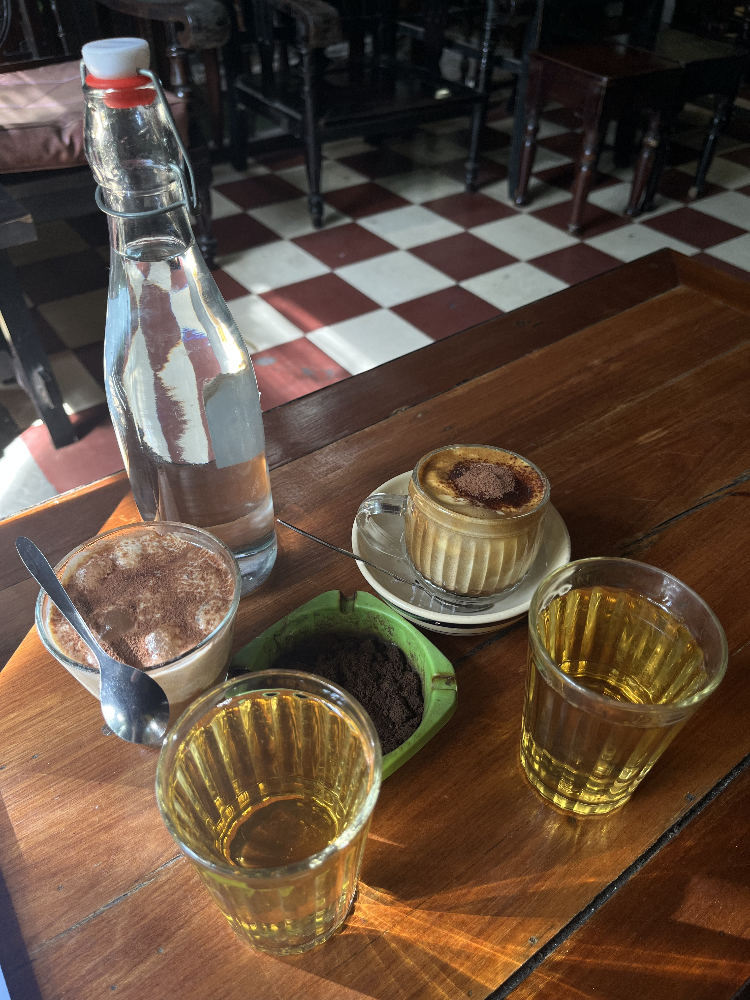
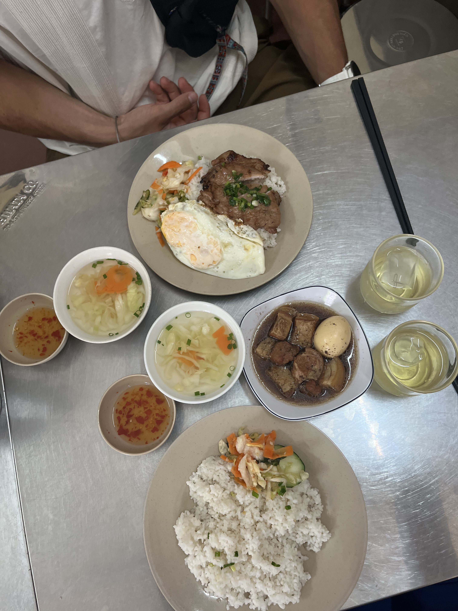
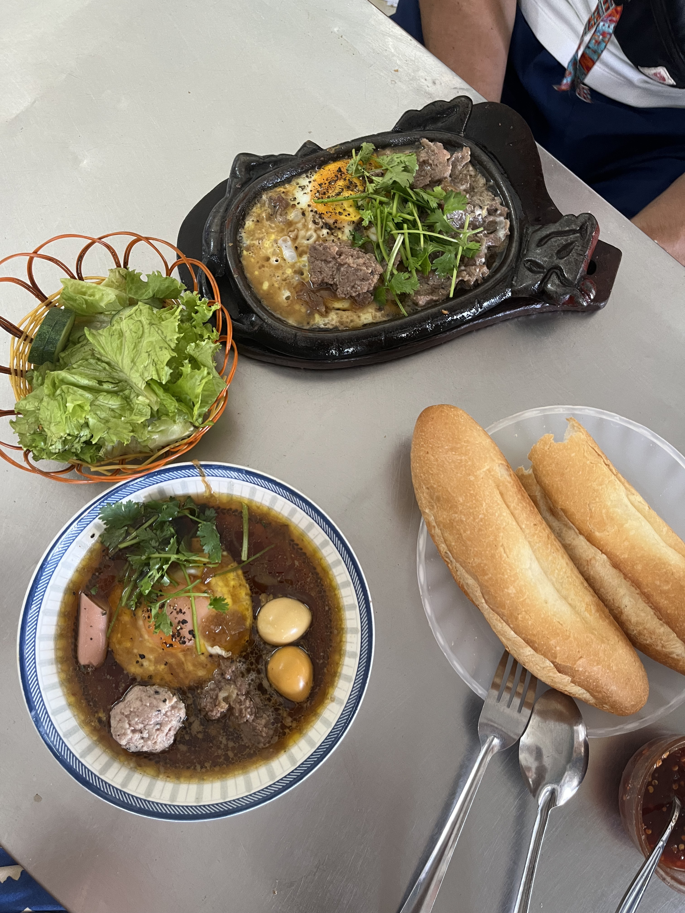
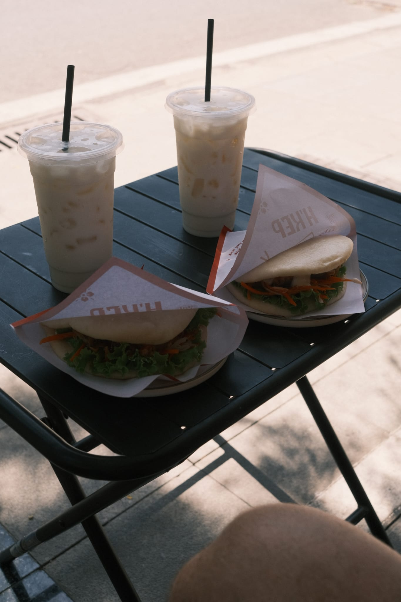
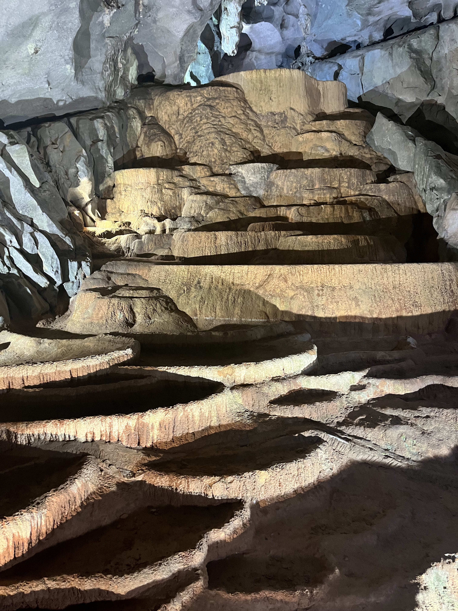
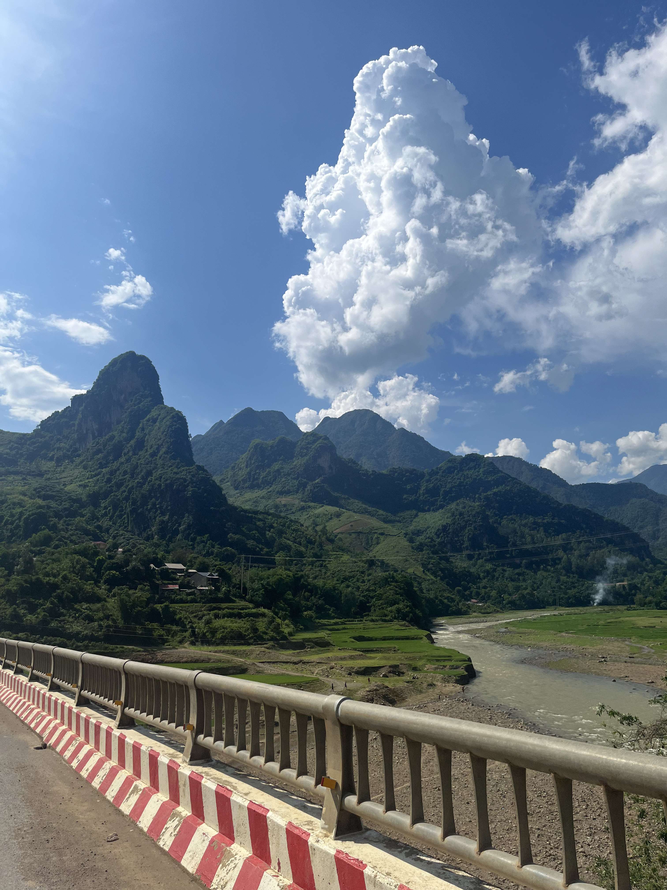

The trip in brief
Six weeks across Vietnam, south to north, starting in Saigon and slowly making our way up. This is a running journal â added to as the trip unfolds.
Le voyage en bref
Six semaines à travers le Vietnam, du sud au nord, en commençant par Saigon et en remontant tranquillement. Un journal qui se remplit au fil des étapes.
Saigon (Ho Chi Minh City) â first four days Saigon (Hô Chi Minh-Ville) â les quatre premiers jours
Arrival in Saigon Arrivée à Saigon
We landed in Saigon on 5 May 2026. A quick Grab ride took us to our hotel, Tra My Saigon â really cheap, but not particularly clean, and the floor of our room was completely warped by humidity. We stayed three nights, which felt like the right amount of time to discover the city without dragging it out. Saigon is alive and loud â not necessarily the kind of place you go to unwind on holiday, but exactly what you want for a first contact with the country.
For our first dinner we tested PhỠHòa Pasteur: a solid introduction to pho. We spent the rest of the evening wandering on foot, soaking up the Saigon nightlife.
Nous sommes arrivés à Saigon le 5 mai 2026. Après un petit Grab rapide, direction notre hôtel, Tra My Saigon â vraiment peu cher, mais pas extrêmement propre, et le plancher de notre chambre était complètement détruit par l'humidité. Nous y sommes restés trois nuits, le temps de découvrir la ville sans trop s'attarder. Saigon est très vivante et bruyante â pas nécessairement le cadre qu'on cherche en vacances, mais parfait pour un premier contact avec le pays.
Pour notre premier dîner, nous avons testé le PhỠHòa Pasteur : une bonne introduction au pho. Nous avons passé le reste de la soirée à marcher et nous émerveiller au gré de la vie nocturne saïgonaise.

Tao Äà n Park & the Reunification Palace Parc Tao Äà n & Palais de la Réunification
Daytime visit to the Tháp ChÄm at Tao Äà n park, followed by our first proper banh mi at Bánh Mì Huỳnh Hoa â Lê Thá» Riêng. After lunch, the Reunification (Independence) Palace and its gardens. The side pavilion holds most of the historical context with detailed maps explaining the modern history of Vietnam well â though there's a lot to absorb. The palace itself is more of an architectural visit: imagine the place in use (rooftop helicopter, bunker, reception hall, gardens, interiors). It's not air-conditioned â anyone who suffers in the heat should plan around the cooler hours.
For dinner we ended up in what turned out to be our first "bad experience": a restaurant highly recommended on Google, but in practice far too touristy, well above Saigon prices, and visibly split between a foreigner room and a local room.
Visite de jour du Tháp ChÄm dans le parc Tao Äà n, puis dégustation de notre premier vrai banh mi chez Bánh Mì Huỳnh Hoa â Lê Thá» Riêng. L'après-midi, le Palais de la Réunification (Independence Palace) et ses jardins. Le pavillon attenant concentre la majorité du contexte historique avec de grandes cartes qui détaillent bien l'histoire moderne du Vietnam, mais cela reste assez compliqué à assimiler compte tenu de la densité du récit. Le palais en lui-même est plutôt une visite d'architecture, pour imaginer la vie pendant son utilisation (hélicoptère sur le toit, bunker, belle salle de réception, beaux jardins, intérieurs). Le palais n'étant pas climatisé, il est préférable, pour les personnes qui souffrent de la chaleur, de le visiter quand il ne fait pas trop chaud.
Pour le dîner, nous avons essuyé notre première « mauvaise expérience » : un restaurant pourtant bien recommandé sur Google nous est apparu beaucoup trop touristique, trop onéreux par rapport à la norme saïgonaise, et visiblement divisé en deux salles â une pour les étrangers, une pour les locaux.


Old centre, Cholon & Bui Vien Centre historique, Cholon & Bui Vien
We walked from the hotel down to Saigon's historic centre. Coffee stop at Tonkin Specialty Coffee â touristy but excellent. We tried an egg coffee and a ginger coffee. The café is tucked away on the second floor, at the end of a long corridor.
Lunch two minutes away at Bún riêu Gánh: authentic, slightly pricey, with a wonderfully savoury pork-and-shrimp pho. First experience with Mắm tôm, a fermented shrimp paste â very strong, very particular flavour.
In the afternoon we visited a station of the brand-new Metro Line 1: the station was deserted, ridership clearly hasn't taken off yet. In a desperate quest for sticky rice we landed at Xoà i-Mango Local Dishes, then took a Grab to Cholon, Saigon's Chinatown. Dessert at Xôi Lá Chuá»i phÆ°á»ng An Äông, then Cristina got her nails done at Lisa Nail & Spa â Tiá»m Nail Quáºn 5.
Back to the hotel, then out again that evening to walk Bùi Viá»n Walking Street â Saigon's nightlife strip: bars with dancers, very loud DJ sets. Not exactly a family outing.
Nous avons continué à pied depuis l'hôtel jusqu'au centre historique de Saigon. Pause café chez Tonkin Specialty Coffee, touristique mais excellente adresse. Nous avons dégusté un egg coffee et un café au gingembre. Le café est caché au deuxième étage, au bout d'un long couloir.
Déjeuner à deux pas de là au Bún riêu Gánh : authentique, un peu onéreux, un pho porc et crevette très savoureux. Première expérience avec le Mắm tôm, une pâte de crevettes fermentée au goût très fort et particulier.
L'après-midi, visite d'une station de la toute nouvelle ligne 1 du métro, qui semblait avoir très peu de succès : la station était complètement déserte. Dans une quête désespérée de riz gluant, nous avons jeté notre dévolu sur Xoà i-Mango Local Dishes, puis pris un Grab pour Cholon, le quartier chinois de Saigon. Dessert chez Xôi Lá Chuá»i phÆ°á»ng An Äông, et Cristina s'est fait faire les ongles chez Lisa Nail & Spa â Tiá»m Nail Quáºn 5.
Retour à l'hôtel, puis ressortie en soirée pour visiter la Bùi Viá»n Walking Street, la rue qui regroupe la nightlife de Saigon : bars avec danseuses, sets de DJ très bruyants. Pas nécessairement à visiter en famille.


War Remnants Museum & the night bus to Dalat Musée des Vestiges de la Guerre & bus de nuit pour Dalat
Last day in Saigon. Our bus to Dalat left at 23:30 so we left our bags at the hotel for the day â most decent Saigon hotels are happy to do this for free. Lunch at Phá» HÆ°Æ¡ng Bình, surrounded by drivers on their break.
Then the War Remnants Museum: another window onto modern Vietnamese history, mostly focused on the American war with a smaller section on the French colonial legacy, plus extensive photography halls.
We then drifted toward the modern centre to take refuge inside the malls during the midday heat peak (noonâ2pm). A stop at Guta, a local Vietnamese chain, then the Vincom Center boutiques, the Bến Thà nh Market, and Saigon Square. Both markets offer counterfeits at prices that look interesting to a Western eye but remain inflated compared to actual production cost or to what you can find elsewhere in Vietnam. Saigon Square is noticeably calmer and some of the shops carry better quality.
In the evening we picked up our bus for Dalat â a quick wait at another local coffee chain, Katinat.
Dernier jour à Saigon. Notre bus pour Dalat partait à 23h30, donc nous avons laissé nos affaires à l'hôtel pour la journée â la plupart des hôtels convenables à Saigon acceptent volontiers et gratuitement. Déjeuner au Phá» HÆ°Æ¡ng Bình, entourés de chauffeurs en pause.
Puis visite du Musée des Vestiges de la Guerre, qui revient également sur l'histoire moderne du Vietnam, principalement axé sur la période avec les Américains, avec un petit morceau sur les vestiges coloniaux français et de nombreuses sections photographiques.
Nous nous sommes ensuite dirigés vers le centre moderne pour nous isoler dans les malls et profiter de la climatisation au pic de chaleur (entre midi et 14h). Pause boissons chez Guta, chaîne vietnamienne, puis visite des boutiques du Vincom Center, du Marché Bến Thà nh et de Saigon Square. Les deux marchés présentent des tarifs intéressants pour les Occidentaux mais proposent des contrefaçons de qualité variable à des prix tout de même exagérés au regard du coût de fabrication ou de ce qu'on trouve ailleurs au Vietnam. On recommande tout de même le deuxième, beaucoup plus calme et avec des boutiques plus qualitatives.
En soirée, nous sommes allés récupérer notre bus pour Dalat â petite attente dans un Katinat, autre chaîne de café vietnamienne.


Dalat â highlands and cool air Dalat â hauts plateaux et fraîcheur
Overnight bus arrival â first steps in Dalat Arrivée après le bus de nuit â premiers pas à Dalat
The night bus from Saigon deposited us in Dalat around 6am â no sleep to speak of. The hotel room wasn't ready until 13:00, so we dumped our bags and set off immediately. The altitude is immediately noticeable: cooler, less suffocating than Saigon, with an almost European feel to the air.
We walked around the Há» Xuân HÆ°Æ¡ng lake â the central lake that gives Dalat its character â then caught a film at CineStar Äà Lạt to escape the mid-morning fog and recover from the bus. A nap on the grass of Yersin park once the sun came out, then an excellent lunch at Mì Quảng Há»i An (a bowl of Há»i An-style noodles â flat rice noodles with broth, shrimp, pork, peanuts and sesame crackers).
In the evening: pastries at Lien Hoa Bakery, Dalat's iconic French-influenced bakery; then Bánh Tráng NÆ°á»ng Hiá»n for street pizza (grilled rice paper with egg, spring onion, dried shrimp and chilli â an addictive Dalat staple); avocado ice cream at Chạm Cafe. Rented a scooter for the next two days from Happy Scooter (150,000 VND / day â around â¬5.50).
Le bus de nuit depuis Saigon nous a déposés à Dalat vers 6h â sans vraiment avoir dormi. La chambre d'hôtel n'était pas prête avant 13h, alors nous avons posé les sacs et sommes repartis aussitôt. L'altitude se ressent immédiatement : plus frais, moins étouffant que Saigon, avec quelque chose de presque européen dans l'air.
Balade autour du lac Há» Xuân HÆ°Æ¡ng â le lac central qui donne son caractère à Dalat â puis séance de cinéma au CineStar Äà Lạt pour fuir le brouillard matinal et récupérer du bus. Une sieste sur l'herbe du parc Yersin une fois le soleil revenu, puis excellent déjeuner au Mì Quảng Há»i An (un bol de nouilles façon Há»i An â pâtes de riz larges avec bouillon, crevettes, porc, cacahuètes et galettes de sésame).
Le soir : pâtisseries chez Lien Hoa Bakery, la boulangerie iconique de Dalat à l'influence française ; puis Bánh Tráng NÆ°á»ng Hiá»n pour la street pizza dalataise (galette de riz grillée avec Åuf, oignon nouveau, crevettes séchées et piment â un incontournable addictif) ; glace à l'avocat au Chạm Cafe. Location d'un scooter pour les deux jours suivants chez Happy Scooter (150 000 VND / jour â environ 5,50 â¬).


Monastery, forest café & pagodas by scooter Monastère, café forestier & pagodes en scooter
First full scooter day. We rode out to Thiá»n Viá»n Trúc Lâm, a working Zen Buddhist monastery perched above the pine forest â calm, beautifully maintained, free to visit. From there we traced a mountain path through the trees to reach Tay mÆ¡ Amateurs, a forest café accessible only by scooter or on foot: long wooden tables, the sound of the wind in the pines, Vietnamese drip coffee at 20,000 VND. Worth every twist of the mountain path.
Back in town for our first bánh bèo at Bánh bèo Bà HÆ°á»ng â tiny steamed rice cakes topped with shrimp paste, spring onion oil and crispy pork skin. Then back on the scooter along the DT725 road to Linh Ẩn Pagoda, where a 151-metre female Buddha statue overlooks the valley â one of the tallest in Vietnam. A detour via Chùa Vạn Äức.
Evening: first nem nÆ°á»ng (grilled pork skewers wrapped in rice paper with fresh herbs) at Nem nÆ°á»ng DÅ©ng Lá»c, then a generous plate of grilled pork rice at CÆ¡m tấm Cô Hai. Finished the day, as has become habit, with pastries at Lien Hoa Bakery.
Première vraie journée à scooter. Nous sommes allés jusqu'au Thiá»n Viá»n Trúc Lâm, un monastère bouddhiste Zen en activité perché au-dessus de la forêt de pins â calme, admirablement entretenu, gratuit. De là , nous avons suivi un chemin de montagne dans les arbres jusqu'au Tay mÆ¡ Amateurs, un café forestier uniquement accessible à scooter ou à pied : longues tables en bois, vent dans les pins, café vietnamien goutte-à -goutte à 20 000 VND. Ãa vaut chaque virage du chemin de montagne.
Retour en ville pour nos premiers bánh bèo chez Bánh bèo Bà HÆ°á»ng â petits gâteaux de riz cuit à la vapeur garnis de pâte de crevettes, huile de ciboulette et couenne de porc croustillante. Puis de nouveau sur le scooter le long de la DT725 jusqu'à la Pagode Linh Ẩn, où une statue féminine de Bouddha de 151 mètres domine la vallée â l'une des plus hautes du Vietnam. Détour par Chùa Vạn Äức.
Soirée : premiers nem nÆ°á»ng (brochettes de porc grillé enroulées dans du papier de riz avec des herbes fraîches) chez Nem nÆ°á»ng DÅ©ng Lá»c, puis une généreuse assiette de riz au porc grillé chez CÆ¡m tấm Cô Hai. Fin de journée, comme c'est devenu une habitude, avec des viennoiseries chez Lien Hoa Bakery.


Langbiang Mountain & Linh PhÆ°á»c Pagoda Mont Langbiang & Pagode Linh PhÆ°á»c
We picked up our bus tickets for Quy Nhon at the station first thing, then set off for Langbiang Mountain (2,167 m). The hike is roughly 5 km return; the final kilometre to the summit involves ropes on a steep, muddy slope. A bee stung me somewhere along the way â minor incident. The trail feels genuinely wild: wild horses grazing on the upper slopes, a salamander crossing the path, a small snake. We passed four other tourists total. You register at a checkpoint at the base before starting.
On the descent we noticed the greenhouse agriculture blanketing the hills around Dalat: entire hillsides under opaque white plastic sheeting, protecting strawberries, vegetables and flowers from monsoon rain and insects â produce grown to international export standards. A surreal landscape from above.
Last stop: Linh PhÆ°á»c Pagoda, completed in 1952 after three years of construction and decorated with a famous mosaic made from over 12,000 broken glass bottles. Striking. A Russian tour bus had arrived just before us â the contrast with the silence of Langbiang was stark.
Nous avons d'abord récupéré nos billets de bus pour Quy Nhon à la gare routière, puis direction le mont Langbiang (2 167 m). La randonnée fait environ 5 km aller-retour ; le dernier kilomètre vers le sommet nécessite des cordes sur une pente raide et boueuse. Une abeille m'a piqué quelque part en chemin â incident mineur. Le sentier a quelque chose de vraiment sauvage : des chevaux sauvages qui broutent sur les hauteurs, une salamandre qui traverse le chemin, un petit serpent. Nous avons croisé quatre autres touristes en tout. On s'enregistre à un poste de contrôle au bas avant de partir.
En redescendant, nous avons mieux observé l'agriculture sous serre qui recouvre les collines autour de Dalat : des pans entiers de colline sous des bâches en plastique blanc opaque, protégeant fraises, légumes et fleurs de la pluie de mousson et des insectes â des cultures aux normes internationales d'exportation. Paysage surréaliste vu d'en haut.
Dernière étape : la Pagode Linh PhÆ°á»c, achevée en 1952 après trois ans de construction et ornée d'une célèbre mosaïque de plus de 12 000 bouteilles de verre brisées. Frappant. Un bus touristique russe venait d'arriver juste avant nous â le contraste avec le silence du Langbiang était saisissant.


Quy Nhon â the coast nobody talks about Quy Nhon â le littoral dont personne ne parle
Sleeper bus to Quy Nhon Bus couchette pour Quy Nhon
A 7am sleeper bus from Dalat â a much better experience than the first night bus. The beds are fully flat, the air conditioning bearable, and Vietnamese highways at dawn are surprisingly peaceful. We arrived at Diêu Trì, the nearest bus hub, and caught a shuttle into Quy Nhon centre.
Checked into Lux Quy Nhon Homestay (300,000 VND a night, roughly â¬9.80) â clean, simple, and a genuine bargain. Rented a scooter from a young guy near the homestay. Dinner that evening was our one clear disappointment of Quy Nhon: an overpriced seafood restaurant with mediocre food. An outlier â the city has much better to offer, as the next three days proved.
Bus couchette à 7h depuis Dalat â une expérience bien meilleure que le premier bus de nuit. Les couchettes sont complètement plates, la climatisation supportable, et les autoroutes vietnamiennes à l'aube sont étonnamment paisibles. Nous sommes arrivés à Diêu Trì, le hub de bus le plus proche, et avons pris une navette jusqu'au centre de Quy Nhon.
Check-in au Lux Quy Nhon Homestay (300 000 VND la nuit, environ 9,80 â¬) â propre, simple, et une vraie bonne affaire. Scooter loué à un jeune homme près du homestay. Le dîner ce soir-là fut notre seule déception claire à Quy Nhon : un restaurant de fruits de mer trop cher avec des plats médiocres. Un cas isolé â la ville a bien mieux à offrir, comme les trois jours suivants l'ont prouvé.
Bãi Xếp fishing village & the best meal of the trip Village de pêcheurs de Bãi Xếp & le meilleur repas du voyage
Banh mi for breakfast, then scooter south to Bãi Xếp, a small fishing village with a cove that still feels intimate and local despite a handful of resorts eating into its edges. The sea here is calm, the water transparent. We stayed most of the morning â and yes, got sunburned despite sunscreen; the reflected glare off the water is merciless.
Lunch at Cá Gá» â Là ng Chà i Bãi Xếp: easily the best meal of the entire trip. An open kitchen right on the waterfront, incredibly fresh seafood cooked simply and perfectly, and they brought out a small dessert at the end unprompted. The kind of place you go back to the next day and wish you'd discovered on day one.
Banh mi au petit-déjeuner, puis scooter vers le sud jusqu'à Bãi Xếp, un petit village de pêcheurs avec une crique qui garde encore un caractère intime et local malgré quelques resorts qui grignotent ses bords. La mer y est calme, l'eau transparente. Nous y avons passé la plus grande partie de la matinée â et oui, nous avons pris des coups de soleil malgré la crème solaire ; la réverbération de l'eau est impitoyable.
Déjeuner chez Cá Gá» â Là ng Chà i Bãi Xếp : sans conteste le meilleur repas du voyage. Cuisine ouverte face à la mer, fruits de mer d'une fraîcheur incroyable, cuisinés simplement et parfaitement, et on nous a apporté un petit dessert à la fin sans qu'on le demande. Le genre d'endroit où on retourne le lendemain et où on regrette de ne pas avoir découvert dès le premier jour.


Locals' beach, gym & evening chè Plage des locaux, salle de sport & chè du soir
Morning work session at Tree Hugger café â no air conditioning, but cheap and peaceful with solid WiFi. Lunch: bánh xèo seafood at Bánh Xèo Tôm Nhảy Rau Mầm (sizzling Vietnamese crêpe with prawn, bean sprouts, herbs â fold it in lettuce and dip in nuoc cham). Then an hour at PP Gym â 60,000 VND each, full equipment, friendly.
Afternoon at Bãi biá»n Quy Hòa â a long, clean, tree-lined beach that felt exclusively used by locals. Entry: 5,000 VND + 2,000 VND for the scooter. A world apart from the more frequented spots.
Dinner at MÃM â bún Äáºu mắm tôm: rice vermicelli, fried tofu, boiled pork, fresh herbs, all dipped in fermented shrimp paste. A polarising dish; the smell puts people off but the flavour rewards commitment. Dessert: chè at Chè Cô Thúy. A note on chè â it's a broad category of Vietnamese sweet dessert soups made with coconut milk, tapioca, fruit, and beans: lighter and more nuanced than it sounds, and served either hot or cold.
Session de travail matinale au Tree Hugger café â pas de climatisation, mais bon marché, calme et bonne connexion. Déjeuner : bánh xèo aux fruits de mer chez Bánh Xèo Tôm Nhảy Rau Mầm (crêpe vietnamienne croustillante aux crevettes, pousses de soja, herbes â on la roule dans une feuille de laitue et on la trempe dans du nuoc cham). Ensuite une heure à la PP Gym â 60 000 VND par personne, équipement complet, ambiance sympa.
Après-midi à Bãi biá»n Quy Hòa â une longue plage propre bordée d'arbres qui semblait fréquentée uniquement par des locaux. Entrée : 5 000 VND + 2 000 VND pour le scooter. Un tout autre monde comparé aux spots plus fréquentés.
Dîner au MÃM â bún Äáºu mắm tôm : vermicelles de riz, tofu frit, porc bouilli, herbes fraîches, le tout trempé dans de la pâte de crevettes fermentées. Un plat clivant ; l'odeur rebute beaucoup de gens, mais la saveur récompense les courageux. Dessert : chè chez Chè Cô Thúy. Note sur le chè â c'est une grande famille de desserts sucrés vietnamiens, sortes de soupes au lait de coco avec du tapioca, des fruits et des haricots : plus léger et plus subtil que ça n'y paraît, servi chaud ou froid.


Cham towers, a giant Buddha & seine fishing at dusk Tours Cham, un Bouddha géant & pêche à la senne au crépuscule
Forty degrees. We chose intensity over comfort. First stop: Bánh Ãt Cham Towers â four towers built by the Champa kingdom in the 11thâ12th century, dedicated to Shiva, now inhabited mainly by bats. The surrounding panorama of rice paddies and hills is sweeping; the history, of a civilisation that was gradually absorbed by the Vietnamese expansion southward, is sobering. No crowds, no entrance fees, just a winding lane through the paddy fields to get there.
Two hours of shade and cold drinks at HOSHI COFFEE & TEA, where a local student sat down and spent the time practising his English. Pleasant and unexpected.
Afternoon: Linh Phong / Ãng Núi temple, an 18th-century hermit site built around the cave of monk Lê Ban. The 108-metre seated Buddha at the top is said to be the tallest in Southeast Asia. The climb is 600+ steps â manageable but demanding in 40-degree heat. The panorama at the top â lagoon, forest, open sea â is the reward. The narrow lanes leading back to the beach gave us front-row seats to something remarkable: a couple had waded neck-deep into the sea to spread a large seine net in a wide arc. When they pulled it in, it was alive with silver anchovies and small shrimp catching the last light. The simplicity of it was striking.
Dinner in Xuong Ly village at a restaurant that listed no prices. We ate grilled corn, a seafood rice, sun-dried squid (satisfying to chew through), and á»c Äá biá»n â sea snails with a prized bitter finish the Vietnamese call vá» nhẫn. The bill came to 600,000 VND for a dinner that had no business costing that much. In Alexandre's words: racketeered.
Quarante degrés. Nous avons choisi l'intensité plutôt que le confort. Première étape : les Tours Cham de Bánh Ãt â quatre tours construites par le royaume Cham aux XIeâXIIe siècles, dédiées à Shiva, désormais habitées principalement par des chauves-souris. Le panorama sur les rizières et les collines alentour est immense ; l'histoire d'une civilisation progressivement absorbée par l'expansion vietnamienne vers le sud est saisissante. Pas de foule, pas d'entrée payante â juste une ruelle sinueuse à travers les rizières pour y accéder.
Deux heures d'ombre et de boissons fraîches au HOSHI COFFEE & TEA, où un étudiant local s'est assis et a passé le temps à pratiquer son anglais. Agréable et inattendu.
Après-midi : le temple Linh Phong / Ãng Núi, un site ermite du XVIIIe siècle construit autour de la grotte du moine Lê Ban. Le Bouddha assis de 108 mètres au sommet est réputé être le plus grand d'Asie du Sud-Est. La montée représente plus de 600 marches â faisable mais exigeant avec 40 degrés. Le panorama au sommet â lagune, forêt, mer ouverte â est la récompense. Les ruelles étroites qui redescendent vers la plage nous ont offert un spectacle remarquable : un couple était entré dans la mer jusqu'au cou pour déployer un grand filet en arc de cercle. Quand ils l'ont ramené, il fourmillait d'anchois argentés et de petites crevettes dans la lumière déclinante. D'une simplicité saisissante.
Dîner au village de Xuong Ly dans un restaurant sans prix affichés. Au menu : maïs grillé, riz aux fruits de mer, calmar séché au soleil (agréable à mâcher), et á»c Äá biá»n â des escargots de mer avec une amertume finale prisée que les Vietnamiens appellent vá» nhẫn. L'addition : 600 000 VND pour un repas qui n'avait aucune raison de coûter autant. Selon Alexandre : arnaqués.


Da Nang & Há»i An â coast, craft and a scenic railway Da Nang & Há»i An â littoral, artisanat et train panoramique
Train north to Da Nang Train vers le nord jusqu'Ã Da Nang
A travel day. We left Diêu Trì around 8:30, the train slightly delayed. The NorthâSouth line â the Reunification Express â covers 1,726 km end to end (30 to 36 hours for the full run); we rode only a small stretch of it. Lonely Planet regularly crowns it one of the most beautiful train journeys in the world. The train is old but perfectly functional: mostly sleeper berths (the carriage we were in is the 2nd-class equivalent), two seated carriages and one first-class carriage. It was clear from the platform that the train isn't the Vietnamese commuter's transport of choice â most passengers seemed to be either well-off locals or tourists like us.
After two stops we finally reached Da Nang: taxi to the hotel, then an evening walk down to My Khe beach, by way of Mỳ Quảng Cô Sáu (a Michelin Bib Gourmand) â good and cheap, but nothing transcendent; very much in line with the unstarred places we'd visited so far. We walked the length of the beach along Nguyá» n VÄn Thoại street, then turned up K54 Lê Hữu Trác, where an early-evening market of fruit, fish and shellfish was busy with locals only, well sheltered from mass tourism. We finished the night at the Airbnb, taking refuge from the torrential rain that lasted the whole evening.
Jour de voyage. Nous sommes partis vers 8h30 de Diêu Trì, le train ayant un petit retard. La ligne NordâSud â le Reunification Express â couvre 1 726 km d'un bout à l'autre (entre 30 et 36 heures pour le trajet complet) ; nous n'en empruntons qu'un tronçon minime. Le Lonely Planet la sacre régulièrement comme l'un des plus beaux voyages en train du monde. Le train est assez vieux mais très fonctionnel : majoritairement des couchettes (le wagon que nous occupons est l'équivalent d'une 2e classe), deux wagons de places assises et un wagon de première classe. Dès le quai, nous avons compris que le train n'est pas le moyen de transport privilégié des Vietnamiens â la majorité des passagers semblaient appartenir à la classe aisée, suivis de près par des touristes comme nous.
Après deux arrêts, nous arrivions enfin à Da Nang : taxi vers l'hôtel, puis balade en soirée jusqu'à la plage de My Khe, en passant par Mỳ Quảng Cô Sáu (un Bib Gourmand Michelin) â très bon et peu onéreux, mais rien de transcendant ; très dans la norme des enseignes non étoilées visitées jusque-là . Nous avons descendu toute la plage à pied en longeant la rue Nguyá» n VÄn Thoại, avant de remonter l'artère K54 Lê Hữu Trác : il y avait là , en début de soirée, un grand marché de fruits, poissons et crustacés uniquement fréquenté par des locaux, bien à l'abri du tourisme de masse. Nous avons terminé la soirée à l'Airbnb pour nous réfugier de la pluie torrentielle qui a duré toute la soirée.

Sơn Trà (Monkey Mountain) & Hà n Market Sơn Trà (la montagne des singes) & le marché Hà n
Scooter rented from Thanh Cong Motorbike Rental, then up Monkey Mountain â without seeing many monkeys.
The SÆ¡n Trà peninsula, commonly called Monkey Mountain, is a magnificent spot but one that doesn't improvise: hiking simply isn't a widespread habit in Vietnam, so the infrastructure for walkers (marked trails, pavements, signage) is almost non-existent. SÆ¡n Trà is built for two wheels, not for feet. Regulations are strict for safety reasons â the slopes are steep, and automatic scooters are formally banned from the upper roads; only semi-automatic or manual bikes are allowed. Ranger and police checkpoints sit at the strategic junctions to check your vehicle and turn back anyone who shouldn't be there. We saw a few people walking the tarmac, but it's hard to imagine doing the full loop on foot given the distances and elevation under that heat. And if you do want to walk the few existing trail sections, note that the path isn't a loop: you have to be dropped off by Grab at the start and arrange a separate pickup at the exit, because no taxi cruises these remote zones. All of which makes the famous monkeys hard to spot â they only come down to the road when they need to cross it.
It's not all gripes, though. The mountain's beaches â plastic pollution aside â feel like a pocket of privacy inside a big city. And because travellers turn up with food, the monkeys are drawn down: we got to see some up close. Not the rare endemic red-shanked douc, but rhesus macaques, lured among other things by the coconuts visitors bring. The track down to that beach was in very poor shape â it looks as though the café at the top dumps its waste there, or rainwater runoff drags it down to the shore. Definitely not suited to anyone with reduced mobility. In the end, the mountain offers a beautiful walk through the jungle's biodiversity and a great way to get away from the city's tourist crowds.
Back down, we tried the HÃ n Market to see the merchandise for ourselves. The atmosphere is chaotic, the aisles narrow between piles of clothes, and the mood is good: more often than not the vendors are smiling and, despite the language barrier, banter and bargain with humour. The ground floor sells spices, coffee, bulk goods and dried fruit, plus entry-level souvenirs and a few street-food and drinks stands. The first floor is wall-to-wall counterfeits of every big brand, of variable quality. Haggling is the norm here. The vendors talk to one another, so they've aligned on a common floor price. Our purchasing power is far higher than theirs, and that's no secret. It's up to you to decide what feels fair â without forgetting that an informal "tourist tax" is expected and normal. If a negotiation comes down to fifty cents (about 12,000â13,000 VND), those fifty cents won't change your life, but they can buy a meal for the vendor's family. That said, there's no question of being fleeced with outright extortionate prices.
You can also shop the independent boutiques. We tried The Lalin for clothes a notch above the market. Linen and silk dominated, and at first glance the cut and style looked modern and well-made. It was only after trying things on that I realised the finishing and seams are very basic â to the point that the garment doesn't follow the body's lines or drape naturally. That part is subjective and depends on your build, but I wanted to share my honest experience. Prices were higher than the market, but fair for the choice of fabric and quality. We ended the shopping nicely with a kem bÆ¡ (avocado ice cream).
Scooter loué chez Thanh Cong Motorbike Rental, puis montée au pic des singes â sans voir beaucoup de singes.
La péninsule de SÆ¡n Trà , plus communément appelée la « montagne des singes », est un endroit magnifique mais qui ne s'improvise pas : au Vietnam, la culture de la randonnée pédestre n'est pas très répandue, et les infrastructures dédiées à la marche (sentiers balisés, trottoirs, signalisation) y sont presque inexistantes. SÆ¡n Trà est pensée pour les deux-roues plutôt que pour les piétons. La réglementation y est très stricte pour des raisons de sécurité â les pentes sont abruptes, et l'accès aux routes supérieures est formellement interdit aux scooters automatiques ; seuls les semi-automatiques ou manuels sont autorisés. Des check-points de garde-forestiers et de police sont positionnés aux points stratégiques pour contrôler votre véhicule et faire faire demi-tour aux contrevenants. Nous avons aperçu quelques personnes marcher le long du bitume, mais il est difficile d'imaginer faire le tour complet à pied tant les distances sont longues et le dénivelé important sous cette chaleur. Et si vous tenez à marcher là où c'est autorisé (sur les rares portions de sentiers existantes), sachez que le chemin ne forme pas une boucle : il faut se faire déposer en Grab au point de départ et planifier un autre véhicule pour le pick-up à la sortie, car aucun taxi ne circule à la volée dans ces zones reculées. Tout cela rend les fameux singes bien difficiles à voir â ils ne sortent sur la route que pour la traverser.
Il n'y a pas que du négatif. Les plages de la montagne, malgré la pollution plastique, nous donnent l'impression d'un coin d'intimité au cÅur d'une grande ville. Et comme les voyageurs arrivent avec de la nourriture, les singes y sont attirés : nous avons eu la chance d'en voir de très près. Pas le fameux douc à pattes rousses (l'espèce rare et endémique), mais des macaques rhésus, attirés entre autres par les noix de coco apportées par les visiteurs. Le chemin pour rejoindre cette plage était en très mauvais état â on a l'impression que le café d'en haut y jette ses déchets, ou que le ruissellement des pluies les ramène vers le littoral. Absolument pas adapté aux personnes à mobilité réduite. Au final, la montagne offre une belle promenade au cÅur de la biodiversité de la jungle et une super façon de s'éloigner des masses touristiques de la ville.
De retour en bas, nous avons testé le marché Hà n pour voir la marchandise de nos propres yeux. L'ambiance est chaotique, les allées très étroites entre les piles de vêtements, et la bonne humeur règne : le plus souvent, les commerçants ont le sourire et, malgré la barrière de la langue, ils nous abordent avec humour et jouent le jeu de la négociation. Au rez-de-chaussée se vendent épices, café, produits en vrac et fruits séchés, ainsi que des souvenirs d'entrée de gamme et quelques stands de street food et de boissons. Au premier étage, ce sont des contrefaçons de toutes les grandes marques, de qualité variable. Ici, le marchandage fait partie de la norme. Les commerçants se parlent entre eux : ils se sont alignés sur un prix plancher commun. Notre pouvoir d'achat est bien plus élevé que le leur, et ce n'est pas une information cachée. C'est à vous de trancher pour ce que vous considérez comme un prix juste, sans oublier qu'une « taxe touristique » informelle est attendue et normale. Si la négociation se joue à cinquante centimes près (environ 12 000 ou 13 000 VND), ces cinquante centimes ne changeront pas votre vie, alors qu'ils peuvent offrir un repas à la famille du commerçant. Par contre, il n'est pas question de se faire rouler avec des tarifs exorbitants.
Il est aussi possible de faire du shopping dans les boutiques indépendantes. Nous avons tenté The Lalin pour des vêtements d'une qualité supérieure à celle du marché. Le lin et la soie dominaient, et à première vue la coupe et le style avaient l'air modernes et qualitatifs. C'est seulement après essayage que je me suis rendu compte que les finitions et les coutures sont très simples â au point que le vêtement n'épouse pas les lignes du corps ni son tombé naturel. Cette partie est subjective et dépend de la morphologie de chacun, mais je tenais à partager mon expérience. Les prix étaient plus élevés qu'au marché, mais justes pour le choix de la matière et la qualité. Excellente façon de finir le shopping en s'offrant un kem bÆ¡ (glace à l'avocat).


A work day in Da Nang Une journée de travail à Da Nang
A quiet work day. Cristina had an interview at 4pm, so we found a café to settle into for the morning, right by our place â another gem tucked away in an alley: NAM House Café, a beautiful two-floor spot serving drinks and pastries for not much (coffees around 50,000 VND on average). No AC, but plenty of fans and wide-open windows, so a constant cross-breeze.
Lunch at CÆ¡m tấm Bà Lang, an excellent address â the pork is perfectly cooked and caramelised, and as so often, very cheap. In the afternoon, while Cri prepared for her interview at the Airbnb, I went to train at the My Khe beach street-workout park. In the evening, to celebrate a successful interview, we went hunting for sushi in Da Nang and settled â a mistake on my part, fearing I wouldn't be full â on an all-you-can-eat. The dinner cost too much for the pleasure it gave, compared with a family-run restaurant: a good dinner for nothing.
Journée chill et travail. Cristina avait un entretien à 16h, nous avons donc repéré un café pour nous poser tranquillement en début de matinée, juste à côté de notre hébergement â une pépite là encore cachée dans une allée : NAM House Café, très beau café sur deux étages qui sert boissons et pâtisseries pour pas trop cher (en moyenne 50 000 VND le café). Pas de clim, mais bon nombre de ventilateurs et bien ouvert, donc plein de courants d'air.
Déjeuner chez CÆ¡m tấm Bà Lang, très bonne adresse â le porc y est parfaitement cuit et caramélisé, et comme bien souvent, très peu onéreux. L'après-midi, pendant que Cri préparait son entretien à l'Airbnb, je suis parti m'entraîner au street-workout de la plage de My Khe. En soirée, pour célébrer un entretien réussi, nous sommes partis en quête de sushi dans Da Nang et notre dévolu s'est jeté â une erreur de ma part qui craignait la non-satiété â sur un sushi à volonté. Le dîner fut trop cher au regard du plaisir pris, comparé à un restaurant tenu par une famille : un bon dîner pour rien.




Há»i An â old town, leather, Cao Lầu & silver Há»i An â vieille ville, cuir, Cao Lầu & argent
To our surprise, Da Nang had far less to offer than we'd expected. Given the hype around the city, it turns out to be a big digital-nomad hub doubled with a beach resort hugely popular with Indian, Australian and Korean tourists â saturated with trendy cafés and beach clubs. So we often found ourselves back on the scooter heading for Há»i An.
We started the day with a quick swim on a beach along the coast between the two cities: Hidden Beach. Most of the coastal strip between Da Nang and Há»i An is privatised by high-end hotel complexes run by big international groups like Marriott and Sheraton. The small public stretch that sheltered us had stayed authentic, with local vendors offering loungers and drinks without being pushy.
Há»i An, though mostly geared toward commerce â not to say over-consumption â is still very charming. The old town, a UNESCO World Heritage site, stands out for its colonial houses with yellow façades and orange-tiled roofs. It's full of lovely courtyards, a vibrant market and a density of tourists fit to burst.
Wandering the lanes, you can't miss the countless leather and bespoke-shoe workshops. The work is fast and often impressive, but one question keeps coming up: where does the leather come from? Contrary to what you'd think, there's no hidden tannery behind the old town. The sourcing secret comes down to two realities, depending on the boutique's range. For the most affordable cow or buffalo leathers, artisans source directly from the southern provinces of Vietnam (notably toward Ho Chi Minh City); the hides are industrially tanned before arriving in rolls at the Há»i An wholesalers. That short circuit is what allows such competitive prices and record turnaround times (sometimes under 24 hours!). For "exotic" textures (crocodile- or snake-style), it's almost always embossed cow leather (pressed with a pattern). If you're after quality, steer clear of suspiciously low prices that often hide faux leather, and ask to feel and choose your own roll of raw material.
For food, the central market (Chợ Há»i An) offers very local street-food options. It's the perfect place to try Cao Lầu, the town's signature dish: thick rice noodles with a slightly chewy texture (thanks to the local alkaline water), bathed in a reduced pork broth scented with soy sauce and five-spice, topped with slices of char siu pork and fresh herbs. Hygiene sometimes leaves something to be desired, but others will joke that it adds flavour.
I also took the chance to have a custom silver piece made at Sen Craft Silver, a tiny family business with a stall right on the street. A couple runs it with the woman's brother, who is deaf-mute and handles the forging. Your piece is made to measure in under two hours, entirely by hand before your eyes â a wonderful demonstration of local craft. We also passed the famous Japanese Bridge.
à notre grande surprise, Da Nang avait beaucoup moins à offrir que ce qu'on attendait. Vu le hype qui entoure cette ville, ce n'est finalement qu'un grand hub de digital nomads doublé d'une station balnéaire très prisée des touristes indiens, australiens et coréens â saturée de cafés branchés et de beach clubs. Nous nous sommes donc souvent retrouvés sur notre scooter en route vers Há»i An.
Nous avons commencé la journée par une courte baignade sur une plage du littoral entre les deux villes : Hidden Beach. La majorité de la bande côtière entre Da Nang et Há»i An est privatisée par des complexes hôteliers haut de gamme, gérés par de grands groupes internationaux comme Marriott et Sheraton. La petite portion de plage publique qui nous a servi de refuge était restée authentique, et des commerçants locaux y offraient leurs services (transats, boissons) sans être insistants.
Há»i An, quoique principalement axée sur le commerce â pour ne pas dire la surconsommation â, reste très charmante. La vieille ville, classée au patrimoine mondial de l'UNESCO, se distingue par ses maisons coloniales aux façades jaunes et aux toits de tuiles orangées. Elle regorge de cours intérieures super sympas, d'un marché vibrant et d'une densité touristique à en craquer.
Quand on déambule dans ses ruelles, difficile de passer à côté des innombrables échoppes de maroquinerie et de chaussures sur mesure. Le travail est rapide, souvent impressionnant, mais une question revient souvent : d'où vient le cuir utilisé par les artisans ? Contrairement à ce qu'on peut penser, il n'y a pas de tannerie cachée derrière la vieille ville. Le secret du sourcing tient en deux réalités, selon la gamme de la boutique. Pour les cuirs de vache ou de buffle les plus abordables, les artisans s'approvisionnent directement dans les provinces du sud du Vietnam (notamment vers Ho Chi Minh-Ville) ; les peaux y sont tannées industriellement avant d'arriver en rouleaux chez les grossistes de Há»i An. C'est ce circuit court qui permet des prix aussi compétitifs et des délais de fabrication records (parfois moins de 24 h !). Pour les textures « exotiques » (façon crocodile ou serpent), il s'agit presque toujours de cuir de vache embossé (pressé avec un motif). Si vous cherchez de la qualité, fuyez les prix trop bas qui cachent souvent du simili, et demandez à toucher et choisir vous-même votre rouleau de matière première.
Pour manger, le marché central (Chợ Há»i An) offre des options de street food très locales. C'est l'endroit parfait pour goûter au Cao Lầu, la spécialité culinaire emblématique de la ville : des nouilles de riz épaisses à la texture un peu caoutchouteuse (grâce à l'eau alcaline locale), qui baignent dans un bouillon de porc réduit parfumé à la sauce soja et aux cinq épices, le tout surmonté de tranches de porc char siu et d'herbes fraîches. La salubrité de l'endroit laisse parfois à désirer, mais d'autres diront avec humour que ça rajoute de la saveur aux plats.
J'ai aussi profité du moment pour me faire faire un bijou en argent sur mesure chez Sen Craft Silver, une toute petite entreprise familiale dont le stand est installé directement dans la rue. C'est un couple qui tient la boutique avec le frère de la dame, sourd-muet, qui s'occupe de la forge. Votre bijou est façonné sur mesure en moins de deux heures, entièrement à la main sous vos yeux â une magnifique démonstration d'artisanat local. Nous sommes aussi passés par le fameux pont japonais.


Spa day & the silk village of Nam PhÆ°á»c Journée spa & le village de soie de Nam PhÆ°á»c
A well-anticipated spa day (I'd booked it as a birthday gift for Cri, ahead of her actual birthday). After a leisurely wake-up and a coffee in Da Nang, we had a sticky-rice breakfast (xôi) at the Há»i An central market. The spa we chose was La Spa, at the La Siesta hotel â a lovely, deeply restful experience.
Afterwards we rode out to the village of Nam PhÆ°á»c, a famous hand-silk-production village whose output is now much reduced â but we had the incredible luck of visiting a still-working mulberry-silkworm production line. After Cri bought 2.5 m of a silk she chose, the shopkeeper, who spoke no English, handed us her phone with "do you want to see the weaving?" translated on the screen. A quick nod and she led us out. The workshop sat a hundred metres behind the shop: inside, two men, bare-chested and dripping in the heat, welcomed us and walked us through the machines that make up their line and the production process. Our host explained that his father is the 18th generation of weavers in the family, and that they've practised the craft since the 14th century. After a very thorough explanation of each machine, we rode back to Da Nang.
Une journée spa bien anticipée (je l'avais réservée en guise de cadeau d'anniversaire pour Cri, avant sa date de fête). Après un réveil tranquille et un café à Da Nang, petit-déjeuner de riz gluant (xôi) au marché central de Há»i An. Le spa choisi était La Spa, dans l'hôtel La Siesta â une belle expérience, bien reposante.
Ensuite, nous sommes partis vers le village de Nam PhÆ°á»c, célèbre village de production de soie à la main dont la production est aujourd'hui bien réduite â mais nous avons eu la chance inouïe de visiter une ligne de production de soie de vers à soie de mûrier encore fonctionnelle, à la main. Après l'achat par Cri de 2,5 m d'une soie de son choix, la vendeuse, qui ne parlait pas anglais, nous tend son téléphone avec « do you want to see the weaving ? » traduit dessus. Après un rapide hochement de tête, elle nous invite à la suivre. L'atelier se tenait une centaine de mètres derrière la boutique : à l'intérieur, deux hommes torse nu, le corps perlant de transpiration à cause de la forte chaleur, nous accueillent et nous expliquent les différentes machines qui composent leur ligne ainsi que le procédé de fabrication. Notre interlocuteur nous explique que son père est la 18e génération de tisserands de sa famille et qu'ils pratiquent ce métier depuis le XIVe siècle. Après une explication très exhaustive de chaque machine, nous repartîmes en scooter vers Da Nang.


Da Nang beach & a note on double pricing Plage de Da Nang & une note sur la double tarification
A day on Da Nang's beach. A tip for shading from the sun, which that day read a UV index of 8: find the shadow of a palm tree. This "make-do" technique saves you from having to rent a lounger. Don't forget to grab a little bowl of fresh fruit and some water in a thermos to keep it nice and cold.
Just before reaching the beach, we had a pressing craving for eggs at Hoa's Beef Steak and Eggs. Two women treated us to a local street-food speciality: quail eggs marinated in soy sauce, served with small bowls of hot pork or beef broth, alongside crusty bánh mì baguettes reheated right on the coals. Best avoided if you're a hypochondriac or fussy about hygiene.
For work, we spent a lot of time at Nâm House café, a very charming spot with a retro feel, carried by a soundtrack of 1970s Vietnamese pop. We later discovered they run a double-pricing system: one menu for locals and another for foreigners, with prices inflated for tourists by 10â20% on average.
Personally, that doesn't shock me, given our much higher purchasing power. Ethically, we use their resources fleetingly without contributing to the local economy in the long term, which strays from the principles of sustainable tourism â so it feels normal that an informal "tourist tax" applies to us. Alexandre disagrees, though: for him it isn't a fair, transparent commercial practice, and it strips away, in his eyes, the whole sense of welcome and hospitality.
Une journée sur la plage de Da Nang. Astuce pour se protéger du soleil, qui affichait ce jour-là un index UV de 8 : trouvez l'ombre d'un palmier. Cette technique de « système D » vous évite d'avoir à louer un transat. N'oubliez pas de vous prendre un petit bol de fruits frais et de l'eau dans un thermos pour la garder bien fraîche.
Juste avant d'arriver à la plage, nous avions une envie pressante d'Åufs au Hoa's Beef Steak and Eggs. Deux dames nous ont régalés d'une spécialité locale de street food : des Åufs de caille marinés dans la sauce soja, accompagnés de petites assiettes de bouillon de porc ou de bÅuf bien chaud, le tout servi avec des baguettes de bánh mì croustillantes, réchauffées directement sur les braises. à éviter cependant si vous êtes hypocondriaque ou trop regardant niveau hygiène.
Pour travailler, on a passé beaucoup de temps au café Nâm House, un endroit très charmant à l'ambiance rétro, bercé par une bande-son de variété vietnamienne des années 70. Nous avons découvert plus tard qu'ils pratiquent une double tarification : une carte pour les locaux et une autre pour les étrangers, avec des prix gonflés pour les touristes de 10 à 20 % en moyenne.
Personnellement, ça ne me choque pas étant donné notre pouvoir d'achat beaucoup plus élevé. Ãthiquement, nous utilisons leurs ressources de façon éphémère sans participer à l'économie locale sur le long terme, ce qui s'éloigne des principes du tourisme durable â c'est donc normal que cette « taxe touristique » informelle nous soit appliquée. D'un autre côté, Alexandre est en désaccord : pour lui, ce n'est pas une pratique commerciale équitable et transparente, et cela enlève, à ses yeux, tout le sens de l'accueil et de l'hospitalité.

Huế â the imperial city Huế â la cité impériale
The scenic train to Huế Le train panoramique vers Huế
We took the scenic train line, departing Da Nang in the afternoon. This genuinely worthwhile ride lets you watch, from the train, the coastline marking the border between the Thừa Thiên Huế and Da Nang provinces â mostly untouched by tourism, though some sections are being developed. Cat-cuddling at a café next to the station and chicken rice rounded out the day.
Our first real homestay! We found this place on Booking. We were dropped right in front of our hosts, who came to open the gate for us. Behind it hid a beautiful garden, with bonsais and fruit trees scattered around the inner courtyard. A retired couple had converted their large house into lodging for tourists â three or four rooms. Ours was the only one without an en-suite bathroom. At first glance it seemed lovely, but it was only in the morning that we noticed the downsides. Vietnamese people rise with the sun, and here it comes up around five in the morning. So we were woken by uninhibited bodily noises and carrying voices, from what sounded like various deliveries.
Nous avons pris la ligne touristique de train, au départ de Da Nang dans l'après-midi. Ce très beau trajet, qui vaut véritablement le détour, vous laisse contempler depuis le train le littoral délimitant les provinces de Thừa Thiên Huế et de Da Nang â principalement immaculé du tourisme, mais en voie d'aménagement sur certaines sections. Câlins à un chat dans un café à côté de la gare et riz au poulet.
Notre premier vrai homestay ! Nous avons trouvé ce logement sur Booking. On nous a déposés en face de chez nos hôtes, venus nous ouvrir le portail. Derrière celui-ci se cachait un beau jardin, avec des bonsaïs et des arbres fruitiers parsemés un peu partout dans la cour intérieure. Un couple de retraités a aménagé sa grande maison en logement pour touristes â trois ou quatre chambres. La nôtre était la seule sans salle de douche rattachée. à première vue, ce logement nous paraissait sympa, mais c'est seulement le matin que nous nous sommes aperçus des inconvénients. Les Vietnamiens se lèvent avec le soleil, et ici, il se lève vers cinq heures du matin. Nous nous sommes donc fait réveiller par des bruits corporels affranchis et des voix qui portaient, de ce qui semblait être des livraisons diverses.


The Citadel & the tomb of Tá»± Äức La Citadelle & le tombeau de Tá»± Äức
Huế is charming. You won't need more than two nights to see it. The Imperial City is impressive, especially at night, when the lighting does justice to its beauty. We started the day with two Korean burgers at H'KEP, washed down with two glasses of soy milk. Despite the sun, we set off to explore the citadel.
The Citadel of Huế is the former political and imperial heart of Vietnam under the Nguyá» n dynasty (1802â1945). A UNESCO site, this immense Vauban-style fortress holds both the Imperial City and the Forbidden Purple City. Inspired by Beijing's Forbidden City but adapted to Vietnamese traditions, it stands out for its lotus-filled moats, its carved-wood pavilions, its sacred temples and its monumental gates, like the famous Meridian Gate (Ngá» Môn). Despite heavy war damage, its restored palaces and gardens still convey the grandeur of Vietnamese royal architecture. We chose the 530,000 VND ticket per person, which includes three tombs plus access to the citadel. Our taxi driver told us that May to August are the months for domestic tourists, while from September onward, as temperatures drop, the Westerners arrive. The streets and attractions like the Imperial City were full of tourists renting traditional costumes for photo shoots. Several breaks were in order during the visit â the citadel has only one air-conditioned pavilion, and it's the souvenir shop.
The tomb of Tá»± Äức is probably the most poetic and harmonious in Huế. Conceived by the emperor himself as a retreat to escape the weight of power, the site perfectly reflects his soul as a poet and romantic. Closer to a great landscaped park than an austere funerary monument, the complex is arranged around a large lake dotted with water lilies, with stilted pavilions where he came to write verse, and courtyards shaded by a pine forest. After a good nap at the homestay and renting a scooter from our hosts, it's the perfect place to continue the day after the citadel. The site invites you to wander, far from the bustle â though the mystery remains whole: to prevent the looting of his treasures, Tá»± Äức was never buried beneath his official stele. The exact location of his true grave is, to this day, an absolute secret.
We then spent the evening strolling the streets of Huế and along the Perfume River. As usual, Saturday nights are on fire: volleyball matches, karaoke, boat outings, empty beer cans on the ground â the city parties!
Huế est charmante. Vous n'aurez pas besoin de plus de deux nuits pour la visiter. La cité impériale est impressionnante, surtout de nuit, quand le jeu de lumières rend justice à sa beauté. Nous avons commencé la journée avec deux burgers coréens au H'KEP, accompagnés de deux verres de lait de soja. Malgré le soleil, nous nous sommes lancés dans la découverte de la citadelle.
La citadelle de Huế est l'ancien cÅur politique et impérial du Viêt Nam sous la dynastie Nguyá» n (1802-1945). Classée à l'UNESCO, cette immense forteresse à la Vauban abrite à la fois la Cité impériale et la Cité pourpre interdite. Inspirée de la Cité interdite de Pékin mais adaptée aux traditions vietnamiennes, elle se distingue par ses douves fleuries de lotus, ses pavillons en bois sculpté, ses temples sacrés et ses portes monumentales, comme la célèbre porte du Midi (Ngá» Môn). Malgré les lourdes destructions de la guerre, ses palais et jardins restaurés témoignent encore de toute la grandeur de l'architecture royale vietnamienne. Nous avons choisi le billet à 530 000 VND par personne, qui inclut trois tombeaux et l'accès à la citadelle. Notre chauffeur de taxi nous a appris que de mai à août, ce sont les mois pour les touristes nationaux, alors qu'à partir de septembre, avec la baisse des températures, arrivent aussi les Occidentaux. Les rues et les attractions comme la cité impériale étaient remplies de touristes qui louent des costumes traditionnels pour des séances photo. Plusieurs pauses s'imposent durant la visite â la citadelle n'a qu'un pavillon climatisé, et c'est celui de la vente des souvenirs.
Le tombeau de Tá»± Äức est sans doute le plus poétique et le plus harmonieux de Huế. Conçu par l'empereur lui-même comme un domaine de villégiature pour fuir les lourdeurs du pouvoir, ce site reflète parfaitement son âme de poète et de romantique. Plus proche du grand parc paysager que du monument funéraire austère, le complexe s'organise autour d'un grand lac parsemé de nénuphars, de pavillons sur pilotis où il venait écrire des vers, et de cours ombragées par une forêt de pins. Après une bonne sieste au homestay et la location d'un scooter à nos hôtes, c'est l'endroit parfait pour continuer la journée après la citadelle. Le site invite à la flânerie, loin du tumulte, même si le mystère reste entier : pour éviter le pillage de ses richesses, Tá»± Äức n'a jamais été enterré sous sa stèle officielle. Le lieu exact de sa véritable sépulture est, aujourd'hui encore, un secret absolu.
Nous avons ensuite passé la soirée à flâner dans les rues de Huế et à nous balader le long de la rivière aux Parfums. Comme d'habitude, les samedis soirs c'est enflammé : match de volley-ball, karaoké, sorties en bateau, canettes de bière vides au sol â la ville fait la fête !

The tomb of Khải Äá»nh, then north to Äá»ng Há»i Le tombeau de Khải Äá»nh, puis cap au nord vers Äá»ng Há»i
An early Sunday wake-up to visit the tomb of Khải Äá»nh â a large, rather dark-toned hillside complex spread over several tiers, built mostly with materials and techniques fairly innovative for the time (reinforced concrete, cement, slate). It follows the same structure as all Vietnamese mausoleums: first the courtyard of honour, then several stages â a representation of the emperor's close guard (the belief being that his inner circle follows him into the afterlife), a great stele engraved with text (written by another about the deceased, with the exception of Emperor Tá»± Äức, who had no children and wrote his own autobiography).
A very strict, standardised imperial protocol governs the layout. The alignment you see in the Courtyard of Honour (called Sân Chầu or Bái Äình) obeys rules of geomancy and court protocol unchanged for centuries. Almost all the great imperial tombs of Huế (like those of Minh Mạng or Tá»± Äức) have exactly the same configuration: two symmetrical rows facing each other â civil mandarins (recognisable by their round hats and long audience robes), military mandarins and soldiers (carrying weapons or helmets), and animals: horses and elephants, the mounts of the court. These statues don't represent real courtiers who existed; they're figures meant to form a guard of honour to serve the emperor's spirit in the afterlife. Then the mausoleum of Emperor Minh Mạng, before heading north to Äá»ng Há»i.
Réveil matinal ce dimanche pour visiter le tombeau de Khải Äá»nh â grand espace à flanc de colline, aux couleurs assez sombres, décomposé en plusieurs étages, construit principalement avec des matériaux et des techniques assez innovants pour l'époque (béton armé, ciment, ardoise). Même structure que l'ensemble des mausolées vietnamiens : d'abord la cour d'honneur, puis plusieurs étapes â une représentation de la garde rapprochée de l'empereur (la croyance est que son cercle proche le suit dans l'au-delà ), une grande stèle gravée de texte (rédigée par un autre sur le défunt, à l'exception de l'empereur Tá»± Äức qui, n'ayant pas d'enfant, écrivit sa propre autobiographie).
Un protocole impérial très strict et standardisé régit l'agencement. L'alignement que vous voyez dans la cour d'honneur (appelée Sân Chầu ou Bái Äình) obéit à des règles de géomancie et de protocole de cour inchangées depuis des siècles. Presque tous les grands tombeaux impériaux de Huế (comme ceux de Minh Mạng ou de Tá»± Äức) ont exactement la même configuration : deux rangées symétriques face à face â des mandarins civils (reconnaissables à leurs chapeaux ronds et leurs longues robes d'audience), des mandarins militaires et des soldats (portant armes ou casques), et des animaux : des chevaux et des éléphants, qui constituaient les montures de la cour. Ces statues ne représentent pas de vrais courtisans ayant existé ; ce sont des figures destinées à former une garde d'honneur pour servir l'esprit de l'empereur dans l'au-delà . Puis le mausolée de l'empereur Minh Mạng, avant de mettre le cap au nord vers Äá»ng Há»i.
Äá»ng Há»i & Phong Nha â caves and rest Äá»ng Há»i & Phong Nha â grottes et repos
A rest day in Äá»ng Há»i Une journée de repos à Äá»ng Há»i
Second day in Äá»ng Há»i â or really our first full one. We try to wake up with the Vietnamese, that is, at five in the morning, but it's far harder than it sounds. We're tired. It feels as though the fatigue of travelling is starting to pile up, and we realise how important it is to plan rest days.
The sun is heavy; it's hard to be outside between nine and two. That cuts a good chunk out of the day for sightseeing. So we decided to swim in the sea in the morning, then take refuge in a TreeHugger café â and yes, it turns out it's a café chain.
Deuxième journée à Äá»ng Há»i â ou plutôt première journée pleine. Nous essayons de nous réveiller avec les Vietnamiens, c'est-à -dire à cinq heures du matin, mais c'est bien plus difficile qu'on ne le pense. Nous sommes fatigués. On dirait que la fatigue du voyage commence à s'accumuler, et on se rend compte qu'il est important de prévoir des journées de repos.
Le soleil est lourd, c'est difficile d'être dehors entre neuf et quatorze heures. Ce qui nous enlève une bonne partie de la journée pour faire du tourisme. Nous avons donc décidé de nous baigner dans la mer le matin, puis de nous réfugier dans un TreeHugger café â et oui, il s'avère que c'est une chaîne de cafés.
Phong Nha cave & Mooc Spring Grotte de Phong Nha & Mooc Spring
A motorboat cave tour at Phong Nha Cave. After hunting at length for the entrance (the Google Maps pin we'd used got us close to the cave by road, but not to the boats' meeting point), we made for the ticket office and the official tour entrance. The organisation is a bit chaotic â they offer two tour formats and propose sharing the cost of a boat (which is a fixed price) between visitors. After long minutes of waiting, Cristina, backed by a French couple, decided to push our luck to speed up our departure from the dock. And off we went: after about ten minutes, the cave mouth finally opened its arms, and for long minutes we pushed deep inside aboard the boat. We didn't get many explanations â we simply took in the sheer size of the cave and the stalactites and stalagmites formed over several million years.
We then took refuge, in turn, at Thang Nhung â Spit Roast Pork & Noodle Shop for lunch, then at Kiwi café & bookstore for a digestive coffee through the heat peak (which turns the towns into lifeless wastelands). Then we got back on the scooter and rode through beautiful Vietnamese countryside roads toward Mooc Spring, a kind of Vietnamese leisure base. What to say about this experience⦠passive, utterly idle staff, dangerous facilities and an exorbitant price for what it is. We still made the most of the moment to cool off in lovely clear, fresh mountain water, where we were joined by various groups of Westerners.
Tour de grotte en bateau à moteur à la grotte de Phong Nha. Après avoir longuement cherché l'entrée (l'adresse Google Maps renseignée nous approchait au plus près de la grotte par la route, mais pas du point de rendez-vous des bateaux), nous nous dirigeons vers le ticket office et l'entrée officielle du tour en bateau. L'organisation est un peu catastrophique â ils proposent deux formules de tours et de partager entre visiteurs le prix d'un bateau (à coût fixe). Après de longues minutes d'attente, Cristina, avec l'appui d'un couple français, a décidé de pousser notre chance pour presser notre départ de la base nautique. Et nous voilà partis : après une dizaine de minutes, l'entrée de la grotte nous tend enfin ses bras, et pendant de longues minutes on s'enfonce dedans à bord du bateau. Nous n'avons pas eu beaucoup d'explications â nous nous sommes juste contentés de contempler la grande taille de la grotte et les stalactites et stalagmites formées au cours de plusieurs millions d'années.
Nous nous sommes ensuite alternativement réfugiés chez Thang Nhung â Spit Roast Pork & Noodle Shop pour déjeuner, puis chez Kiwi café & bookstore pour un café de digestion, le temps du pic de chaleur de la journée (qui transforme les villes en wasteland dénué de toute vie). Nous avons ensuite enfourché notre scooter à travers de belles routes de campagne vietnamiennes pour nous diriger vers Mooc Spring, une sorte de base de loisirs vietnamienne. Que dire de cette expérience⦠staff passif complètement zélé et oisif, installations DANGEREUSES et prix exorbitant pour ce que c'est. Nous avons tout de même bien profité du moment pour nous rafraîchir dans une belle eau bien claire et fraîche de montagne, où nous fûmes rejoints par différents groupes d'Occidentaux.

Ninh Bình â among the karsts Ninh Bình â au milieu des karsts
The chaotic dawn train to Ninh Bình Le train chaotique de l'aube vers Ninh Bình
At 4:30 we caught our first real sunrise. The train to Ninh Bình passed through Äá»ng Há»i station at 5:20. It was, let's say, an unforgettable experience. It reminded us a little of France's regional trains (TER) â the kind where seats aren't assigned and you have to fight for one, with no air conditioning. But our train added an extra layer to the chaos: cigarettes smoked between carriages! All of that scared us at first, but once settled it wasn't so bad. Later in the trip, around the sixth hour, we were grateful we'd chosen this train despite the very early start, since it's thanks to the cool of the morning that we didn't arrive completely melted. There was plenty of food on offer: piping-hot pho, bánh mì baguettes and all sorts of Vietnamese sweets.
We reached Ninh Bình around 2pm, and the town greeted us empty, its residents taking their nap. We'd held out the whole way for our young intermittent faster, so the first bench we sat on belonged to a restaurant serving the most Westernised bánh mì in Vietnam. We later discovered this town is full of restaurateurs offering pizzas, burgers and hot dogs.
Right next to the restaurant was a scooter rental. Alexandre didn't even need to negotiate: we were offered the standard rate straight away, 100,000 VND a day. That's where we put the true Vietnamese art to work: the almost supernatural ability to pile an absurd amount of weight onto a tiny 125cc scooter. Us, our travel bags, and probably still room for two crates of mangoes. And off we went for a twenty-minute ride to the homestay!
That long journey had earned us a little nap. This homestay sat among the karsts, surrounded by lakes, with silence reigning â so you can imagine how well-rested we came out of it. The evening outing brought a little night market with regional specialities: pillow cake, chè dessert, frozen yoghurt and taro ice cream. Bring on the sugar! I bought myself a lovely skirt and a white shirt in a Vietnamese boutique, Khanh Linh, on the way back.
à 4h30, nous assistons à notre premier vrai lever du soleil. Le train vers Ninh Bình passait par la gare de Äá»ng Há»i à 5h20. Ce fut, disons-le, une expérience inoubliable. Ãa nous a un peu rappelé les trains entre régions (TER) de France, ceux où les places ne sont pas assignées et qu'il faut se battre pour avoir une place assise, sans oublier le manque de climatisation. Mais le train qu'on a pris ajoutait une couche supplémentaire à tout ce chaos : la cigarette fumée entre les wagons ! Tout cela nous a effrayés, mais une fois installés, ce n'était pas si mal. Plus tard dans le trajet, vers la sixième heure, nous nous sommes remerciés d'avoir choisi ce train malgré l'heure très matinale, puisque c'est grâce à la fraîcheur du matin que nous ne sommes pas arrivés complètement fondus. Il y avait pas mal de bouffe qui se servait : du pho bien chaud, des baguettes de bánh mì et toutes sortes de sucreries vietnamiennes.
Nous sommes arrivés à Ninh Bình vers 14 heures, et la ville nous accueillait vide, ses habitants en train de faire la sieste. Nous avons résisté tout le trajet pour notre jeune intermittent de la semaine, donc le premier banc sur lequel on a posé nos fesses était celui d'un resto qui servait les bánh mì les plus occidentalisés du Vietnam. On a découvert plus tard que cette ville était pleine de restaurateurs qui proposaient des pizzas, burgers et hot dogs.
Juste à côté du resto se trouvait un loueur de scooters. Alexandre n'a même pas eu besoin de négocier : on nous proposait directement le tarif standard, 100 000 VND la journée. C'est là que nous avons mis à l'Åuvre le véritable art vietnamien : la capacité presque surnaturelle de faire tenir une quantité absurde de poids sur un minuscule scooter de 125 cm³. Nous, nos sacs de voyage, et probablement encore de la place pour deux cageots de mangues. Et nous voilà partis pour vingt minutes de route jusqu'au homestay !
Ce long voyage nous avait mérité une petite sieste. Cet homestay était au milieu des karsts, des lacs nous entouraient et le calme régnait â vous pouvez donc imaginer à quel point on en est sortis bien reposés. La sortie du soir nous réservait un petit marché de nuit, avec les spécialités de la région : gâteau oreiller, dessert chè, yaourt glacé et glace au taro. Vivement le sucre ! Je me suis acheté une belle jupe et une chemise blanche dans une boutique vietnamienne, Khanh Linh, sur le chemin du retour.


Rowing-boat caves at Trà ng An Grottes en barque à rames à Trà ng An
We set off in the morning to the Trà ng An grottoes tourist office, one of the region's flagship activities. After a quick coffee in Ninh Bình we parked the scooter and picked up two tickets for Route 1 (the operator offers three routes covering different parts of the site; we went for the one reputed to be the longest and most touristic, as Cri had read on a blog the night before). After joining our boat, which we shared with a young Frenchman, we visited several grottoes that cut through the mountains, of varying lengths, with stops in between at temples deep in the jungle and among the karst formations. We saw, among other things, a monkey, a bell and trees.
The afternoon, after a delicious banh mi at Bánh Mì Giòn, was spent at the homestay, reading on the terrace and taking in the beautiful view.
Nous sommes partis en matinée à l'office de tourisme des grottes de Trà ng An, l'une des activités touristiques phares de la région. Après un petit café à Ninh Bình, nous parquons notre scooter et récupérons deux tickets pour le Tour 1 (l'organisme propose trois tours permettant de visiter différents endroits du site ; nous avons opté pour la formule réputée la plus longue et la plus touristique, comme Cri l'avait lu sur un blog la veille). Après avoir rejoint notre barque, que nous occupions avec un jeune Français, nous visitons plusieurs grottes qui traversent les montagnes, de longueurs variables, avec entre elles plusieurs arrêts dans des temples au cÅur de la jungle et des formations karstiques. Nous avons entre autres vu un singe, une cloche et des arbres.
L'après-midi, après un délicieux banh mi chez Bánh Mì Giòn, fut passé au homestay, à lire sur la terrasse et contempler la belle vue.


Leaving Ninh Bình â night bus to Sapa Départ de Ninh Bình â bus de nuit pour Sapa
Last hours among the karsts before leaving Ninh Bình on a night bus headed for Sapa, up in the far northern mountains. The next chapter â the rice terraces and the cool air of the highlands â starts here.
Dernières heures au milieu des karsts avant de quitter Ninh Bình en bus de nuit, direction Sapa, tout là -haut dans les montagnes du Grand Nord. Le prochain chapitre â les rizières en terrasses et la fraîcheur des hauts plateaux â commence ici.
Sapa & the northern loop Sapa & la boucle du Nord
Rain over Sapa & a homestay in the terraces Pluie sur Sapa & homestay dans les terrasses
The night bus turned out to be quite the adventure â but we slept far more than on our first attempt; maybe the mountain road rocked us to sleep. Around two or three in the morning the lights came on, the sky seemed to split open and it poured. We were asked off the bus â only to discover we were simply changing buses. And a surprise: our first cabin sleeper, just two rows of wide, fully flat beds. Luxury-grade comfort!
Rain here usually lasts a few hours, or at most a night, so you rarely see it. This time it was waiting for us â right on our arrival in Sa Pa at six or seven in the morning, heavy bags on our backs. First reflex: find a plastic poncho at the big market opposite the bus station (fairly pointless, since the scooter rental handed us some a few hours later). The rain refused to stop, so we took refuge in a café overlooking the lake, where a kitten helped the time pass without us checking our watches once.
Once Alexandre had found us a scooter â helmets on, ponchos over everything â we set off on a good fifty minutes of vertiginous, water-logged road to Bees Homestay, up in the mountains. Even in rain and fog the road was breathtaking, the terraced rice paddies glowing pale green. Reaching the guesthouse meant crossing the courtyard of our host's uncle, past his geese, ducks and dogs. From the top we looked over the family rice paddy and the road we had just climbed. A beautiful pine-wood house built in 2019 â the perfect place to recharge with long midday naps after a sleeper-bus night.
When we woke, the fog was gone: big sun and, above all, wonderfully cool air. We walked to the neighbouring village, found a good beef-and-vegetable rice, and were rewarded with beautiful scenery, a serpentine road and H'mong women working in their traditional dress.
Back at the homestay, we made friends: our host's family has five children â exactly five. We chatted mostly through Google Translate and quickly understood that among themselves they speak H'mong. They taught us a card game and we played with the older kids.
Ce bus couchette de nuit fut rocambolesque, mais il nous a permis de dormir bien plus que lors de notre première tentative â c'est peut-être la route de montagne qui nous a bercés. Vers deux ou trois heures du matin, les lumières s'allument, le ciel semble se rompre et il pleut des cordes. On nous demande de sortir du bus, pour découvrir qu'il ne s'agissait que d'un changement de bus. Et surprise ! Notre premier bus couchette cabine : deux rangées seulement, des lits bien plus larges et complètement plats. Le confort de luxe !
Habituellement la pluie ici ne dure que quelques heures, ou le temps d'une nuit â on la voit rarement. Cette fois, elle était au rendez-vous, et elle a bien choisi son moment : pile à notre arrivée à Sa Pa, vers six ou sept heures du matin, nos gros sacs sur le dos⦠Premier réflexe : trouver un poncho en plastique au grand marché juste en face de la gare routière (bien inutile, le loueur de scooter nous en a fourni quelques heures plus tard). Comme la pluie ne cessait pas, on s'est réfugiés dans un café avec vue sur le lac, où un chaton nous a aidés à faire passer le temps sans regarder la montre une seule fois.
Après qu'Alexandre nous a trouvé un scooter â casques et ponchos sur le dos â nous voilà partis pour cinquante bonnes minutes de route vertigineuse et aqueuse jusqu'au Bees Homestay, dans les montagnes. Malgré la pluie et le brouillard, la route était époustouflante, les rizières en terrasses reflétant une lumière vert clair. Pour accéder à l'auberge, il faut passer par la cour de l'oncle de notre hôte, entre ses oies, ses canards et ses chiens. Une fois en haut, vue sur la rizière familiale et sur la route que l'on venait de grimper. Une belle maison en bois de pin construite en 2019 â le lieu parfait pour se ressourcer à coups de longues siestes de mi-journée après une nuit en bus couchette.
Au réveil, plus de brouillard : grand soleil et surtout une température bien fraîche et agréable. Balade dans le village d'à côté, où l'on a trouvé un bon riz au bÅuf et aux légumes. La promenade nous réservait de beaux paysages, une route en serpentins et des femmes h'mong en habits traditionnels, au travail.
De retour à l'auberge, on s'est fait des amis ! La famille de notre hôte a des enfants â cinq, pour être exact. On a échangé surtout grâce à Google Translate et vite compris qu'entre eux, ils parlent h'mong. Ils nous ont appris un jeu de cartes et on a joué avec les plus grands.

Our own loop â riding toward Mù Cang Chải Notre propre boucle â cap sur Mù Cang Chải
In the countryside the day starts well before five â for us it was the rooster, at 5:45. The view was waiting at the window, intact and as beautiful as the day before; Cristina could hardly tear her eyes away, almost sorry to leave. But an adventure was calling, and it had to start early: we had decided to build our own version of the Hà Giang Loop â the scooter trip every backpacker does as a guided tour â by ourselves, toward Mù Cang Chải: four days, three nights (it would end a day early). Which meant the two of us plus both travel bags strapped to the back of the scooter. The first bag setup was torture within twenty minutes; after a forced rethink at the first petrol station, the second was better â but still uncomfortable enough that an hour was the maximum we could ride without stopping.
The road did the distracting. Mountains and rice paddies all around, and big "HELLO!"s thrown at us by everyone we crossed. We stopped for breakfast at a street stand selling bánh mì for just 10,000 dong â and right next to it, a group of graduating high-schoolers came out to invite us to share their meal. Vietnamese people are wonderfully welcoming; even far from the big cities, we felt at ease.
Around 15:20 we finally reached our lodging â one of the best views of the whole trip, for barely 12 CAD a night. Earning it meant climbing: Cristina even had to hop off so the scooter could haul itself up the steep final ramp to the top of the hill. A peaceful, restorative night.
à la campagne, le réveil se fait bien avant cinq heures â pour nous, c'est le coq, à 5h45. La vue nous attendait à la fenêtre, intacte et aussi belle que la veille ; Cristina n'arrivait pas à en détacher les yeux, avec presque de la peine à partir. Mais une aventure nous attendait et il fallait la commencer de bonne heure : nous avions décidé de construire notre propre Ha Giang Loop â le trip en scooter que tous les backpackers font en tour guidé â version maison, direction Mù Cang Chải : quatre jours, trois nuits (qui se termineront finalement un jour plus tôt). Ce qui impliquait nous deux plus nos sacs à l'arrière du scooter. Le premier arrimage fut un supplice au bout de vingt minutes ; après une reconfiguration imposée à la première station essence, le deuxième était meilleur â mais toujours assez inconfortable pour ne pas rouler plus d'une heure sans s'arrêter.
La route nous aidait à oublier l'inconfort. Des montagnes et des rizières tout autour, et de grands « HELLO ! » lancés par tous ceux que l'on croisait. Arrêt petit-déjeuner devant un stand de rue qui préparait des bánh mì à seulement 10 000 dongs â et juste à côté, des finissants de lycée sont sortis nous inviter à partager leur repas. Les Vietnamiens sont très accueillants ; même loin des grandes villes, on se sent à l'aise.
Vers 15h20, on arrivait enfin à notre logement â l'une des plus belles vues du voyage, pour à peine 12 CAD la nuit. Encore fallait-il la mériter : Cristina a même dû descendre du scooter pour qu'il réussisse à grimper la montée raide vers le haut de la montagne. Une nuit bien paisible et réparatrice.

A dodged dorm, a turquoise river & Love Hill Dortoir esquivé, rivière turquoise & Love Hill
First of June, up at 5:30 â woken by someone using what sounded like a gramophone to rouse the entire village. We're proper locals now! Cristina couldn't wait to open her eyes on the valley view, and it was staggering. A hammock was at our disposal to watch the clouds drift and the village wake up. After soaking in the view, finishing the previous night's delicious phá» and sharing the moment with the parents, the bags went back on the scooter â and off again.
The plan was to ride much less that day; the plan changed. We reached the only lodging in the area, whose host had told Alexandre over WhatsApp that just the dormitory was left â one big shared room, mattresses laid two-by-two straight on the floor. We knew the conditions would be spartan and figured one night wouldn't kill us. But the first of June turned out far hotter, the room had only two fans, and you needed a mosquito net to sleep. We rested a little at the host's, then decided to push on to the next lodging rather than sleep in the dorm.
The longer road repaid us generously: a route hugging a turquoise river, and the further we rode, the more of Vietnam's ethnic minorities we encountered. The architecture changed as much as the farming â rose fields, rice both slash-and-burn and flooded, soy, fruit trees, and all the other delicacies these lands produce. At the top of each pass we cut the engine: nature sang, and we watched.
Around 17:00 we reached our lodging: a well-kept little hotel with a pool and a garden â Love Hill. Bags down, and five minutes later we were in the pool. A good thing we dared, because two Vietnamese couples and their children soon followed us in. That same evening brought the final, conclusive call for Cristina's first job in Paris!
Premier juin, réveil à 5h30 â par une personne qui utilisait ce qui ressemblait à un gramophone pour réveiller tout le village. On est devenus des vrais ! Cristina avait tellement hâte d'ouvrir les yeux sur la vue de la vallée â c'était époustouflant. Un hamac était à notre disposition pour regarder les nuages et les habitants du village se réveiller. Après avoir bien contemplé la vue, terminé le délicieux phá» de la veille et partagé le moment avec les parents, on a remis les sacs sur le scooter â et c'est reparti.
On avait en tête de faire beaucoup moins de route ce jour-là ; les plans ont changé. Nous avons rejoint le seul hébergement de la région, dont l'hôte avait prévenu Alexandre par WhatsApp qu'il ne restait que le dortoir â une grande chambre partagée, des matelas posés deux par deux à même le sol. Nous savions que les conditions seraient spartiates et qu'une nuit ne nous tuerait pas. Mais ce premier juin était bien plus chaud, la pièce ne comptait que deux ventilateurs et il fallait une moustiquaire pour dormir. On s'est reposés un peu chez l'hôte avant de décider de reprendre la route vers le prochain hébergement plutôt que de dormir dans le dortoir.
La route, plus longue que prévu, nous a payés au centuple : un tracé qui longeait une rivière turquoise et, plus on avançait, plus on découvrait de nouvelles minorités ethniques du Vietnam. L'architecture des maisons changeait autant que les façons de cultiver â champs de rosiers, riz sur brûlis autant qu'inondé, soja, arbres fruitiers et toutes les autres délicatesses que produisent les terres vietnamiennes. En haut de chaque col, on coupait le moteur : la nature chantait et nos yeux observaient.
Vers 17h00, on arrivait à notre logement : un petit hôtel très bien aménagé avec piscine et jardin â le Love Hill. On pose les bagages, et cinq minutes plus tard on est dans la piscine. Une bonne chose qu'on ait osé, puisque deux couples vietnamiens et leurs enfants nous ont suivis. Ce soir-là , Cristina a aussi eu le dernier appel concluant pour son premier job à Paris !

Hanoi â the capital, street by street Hanoï â la capitale, rue par rue
Back over the passes & the bus to Hanoi Retour par les cols & bus pour Hanoï
We woke at Love Hill surrounded by terraced rice paddies. Around 10:30 we set off back toward Sa Pa. The road â a touch more dangerous than the others â was a pleasure thanks to the milder temperatures; at moments it was almost chilly. We were riding at altitude through an intense green wall of trees, with one river crossing where fish-farming pools could be made out in the distance.
Our research said a sleeper bus left Sa Pa for Hanoi around 14:00. Arriving in town we went straight to the departure point, inside a hotel, to check the fare and whether two seats were left. Luck smiled: two seats remained and the ticket was even cheaper than online â 300,000 dong each. Tickets in hand, we returned the scooter, grabbed a bánh mì for the road, and boarded.
The ride doubled as logistics time: finding that night's lodging and untangling a dozen other tasks. After several hours studying the sprawling capital's neighbourhoods, Cristina found an affordable Airbnb in the Old Quarter â the touristic heart, and aptly named, because it really is where wandering is most interesting. The flat didn't live up to its listing photos (a habit by now), but we had a bed and a perfect location.
Réveil au Love Hill, entourés de rizières en terrasses. Vers 10h30, nous nous sommes mis en route vers Sa Pa. Cette route, bien qu'un peu plus dangereuse que les autres, était très agréable grâce à ses températures plus clémentes ; par moments, on aurait même dit qu'il faisait frisquet. Nous étions à haute altitude, dans un paysage composé d'une multitude d'arbres d'un vert intense, avec un passage de rivière où l'on apercevait au loin des bassins de pêche.
D'après nos recherches, un bus couchette partait de Sa Pa vers Hanoï aux alentours de 14h. En arrivant en ville, nous sommes allés directement au point de départ, situé dans un hôtel, pour connaître le prix du billet et vérifier s'il restait deux places. La chance nous a souri : il restait bel et bien deux places et, en prime, le billet était moins cher qu'en ligne â 300 000 dongs par personne. Billets en poche, nous avons déposé le scooter, acheté un bánh mì pour la route et pris notre bus.
Le trajet a servi de session logistique : recherche du logement du soir et une multitude d'autres tâches. Après plusieurs heures à étudier les différents quartiers de cette capitale étendue, Cristina a trouvé un Airbnb abordable dans le Old Quarter, le quartier touristique. Il porte bien son nom : c'est effectivement là qu'il est le plus intéressant de déambuler. Notre logement ne rendait pas du tout justice aux photos de l'annonce â c'est devenu une habitude â mais au moins nous avions un lit et étions idéalement situés.
The 36 streets of the Old Quarter Les 36 rues du vieux quartier
Xin chà o Hanoi! For the first time ever, breakfast was served in our Airbnb â and we were delighted; it warmed the heart a little after the disappointment of the flat itself. Then we set out to walk the 36 streets of the Old Quarter, browsing the countless boutiques around the quarter and St Joseph's Cathedral. The neighbourhood rests on a fascinating historical organisation: each street was once dedicated to a specific trade or craft. Most street names begin with « Hà ng », meaning merchandise or shop â Hà ng Bạc for the silversmiths, Hà ng Gai for silk. The specialisation comes from artisans of the surrounding villages grouping by guild, to sell more easily and pay their taxes. Some trades have disappeared, but the spirit endures: whole stretches still concentrate on shoes, festival supplies or metalwork. It works like one immense open-air market in which every street is a specialised aisle â which is exactly what gives the quarter its dense, electric atmosphere.
Unsurprisingly, one day is not enough to walk them all. Surrounded by beautiful things, we wandered until completely worn out â and just when you think there's nothing left, there's more! Around 20:00 the night market begins, and that again is a whole other experience.
Xin chà o Hanoï ! C'est la première fois qu'on nous sert le petit-déjeuner dans un Airbnb, et on est bien contents â ça réchauffe un peu le cÅur après notre petite déception face au logement. Nous sommes ensuite partis arpenter les 36 rues du Old Quarter, en visitant de nombreuses boutiques dans le quartier et autour de la cathédrale Saint-Joseph. Le quartier repose sur une organisation historique fascinante : chaque rue était autrefois dédiée à un métier ou à un artisanat spécifique. La plupart des noms de rues commencent par le mot « Hà ng », qui signifie marchandise ou boutique â Hà ng Bạc pour les orfèvres, Hà ng Gai pour la soie. Cette spécialisation vient du fait que les artisans, venus des villages alentour, se regroupaient par corporation pour faciliter la vente de leurs produits et le paiement des taxes. Certains métiers ont disparu, mais l'esprit du quartier persiste : on trouve encore des zones entières concentrées sur les chaussures, les articles de fête ou les objets en métal. C'est finalement comme un immense marché à ciel ouvert où chaque rue fait office de rayon spécialisé â ce qui confère au quartier son atmosphère si dense et animée.
Sans surprise, une journée ne suffit pas pour toutes les faire. Entourés de belles choses, nous avons déambulé jusqu'à nous fatiguer complètement â et quand on pense qu'il n'y en a plus, il y en a encore ! Vers 20h00, c'est le marché de nuit qui commence, et là encore, c'est une autre expérience !
A mausoleum in shorts & the Museum of Ethnology Un mausolée en short & le musée d'ethnographie
We attempted Hanoi's so-called "unmissable sights" â though the only one that really interested us was the Ho Chi Minh Mausoleum complex. Alexandre was wearing shorts, so we weren't allowed in â which didn't hurt much, since we didn't see huge interest in it anyway. Lunch was ramen at Tiá»m mì tÆ°Æ¡i ramen2go. We ended up losing ourselves in more residential districts and the hidden alleys this city has in abundance: a whole world of neighbourhood life tucked away in there, locals coming down to the ground floor of their narrow houses to sell vegetables or fresh meat.
A Grab took us to the Vietnam Museum of Ethnology, which taught us a great deal about the country's 54 ethnic minorities. Reading the panels, we realised we had already crossed paths with three or four of them on our way up from the south. A genuinely pleasant visit â all the more so as everything was translated into French.
Then came the tailor: in Cristina's quest to have her custom silk top made from the fabric bought at the Nam PhÆ°á»c mill, we found the tailor DÆ°Æ¡ng, who quoted an affordable 700,000 dong for the project. She explained herself as best she could â at the time of writing, the final product remains a mystery.
Nous avons tenté les « incontournables touristiques » de Hanoï â même si la seule attraction qui avait un vrai intérêt pour nous était le mausolée de Hô Chi Minh. Alexandre portait un short, donc on n'a pas pu entrer â ce qui ne nous a pas fait tant de mal, puisqu'on n'y voyait pas grand intérêt. Déjeuner ramen chez Tiá»m mì tÆ°Æ¡i ramen2go. Finalement, on s'est perdus dans des quartiers plus résidentiels pour finir dans les ruelles cachées, nombreuses dans cette ville : il s'y cache beaucoup de vie de quartier, notamment les locaux qui descendent au rez-de-chaussée de leurs maisons étroites pour vendre des légumes ou de la viande fraîche.
Un Grab nous a ensuite menés au musée d'ethnographie du Vietnam, qui nous a beaucoup appris sur les 54 minorités ethniques du pays. En lisant les enseignes du musée, on s'est rendu compte que nous avions déjà croisé trois ou quatre ethnies en remontant du sud au nord. Une visite agréable, d'autant plus que tout était traduit en français.
Puis direction le tailleur : dans la quête de Cristina pour faire confectionner sa veste en soie sur mesure avec le tissu acheté à l'usine de Nam PhÆ°á»c, on a trouvé le tailleur DÆ°Æ¡ng, qui demandait un prix abordable de 700 000 dongs pour le projet. Elle s'est expliquée avec eux comme elle a pu â au moment d'écrire, le produit final reste un mystère.
A quiet day at The Bluebird's Nest Journée tranquille au Bluebird's Nest
The 5th of June was for resting. Cristina unearthed The Bluebird's Nest, a very hidden café frequented mostly by Hanoi students, with a large selection of books in Vietnamese and English. The ground floor is air-conditioned; the first floor is a bright terrace. She used the calm for a call with Suez about an internship position â just testing the waters, being already well along in the hiring process for the permanent contract.
The rest of the day went to the Ngũ Xã neighbourhood, where we spent our remaining cash on street food before buying the last caramel flans at Yen Yen Bakery, in that same quarter.
Le 5 juin, on s'est reposés. Cristina a déniché The Bluebird's Nest, un café très caché et fréquenté majoritairement par des étudiants de Hanoï, avec une grande sélection de livres en vietnamien et en anglais. Le premier niveau est climatisé et l'étage est une terrasse lumineuse. Elle en a profité pour un appel avec Suez pour un poste de stagiaire â juste pour tâter le terrain, étant déjà bien avancée dans le processus d'embauche pour le CDI.
Le reste de la journée, on a visité le quartier de Ngũ Xã, où l'on a dépensé le restant de notre argent liquide en nourriture de rue, avant d'acheter les derniers flans caramélisés de la boulangerie Yen Yen Bakery, située dans ce même quartier.
Bát Trà ng pottery & the silk looms of Nha Xá Poteries de Bát Trà ng & métiers à soie de Nha Xá
Scooter rented in the morning and off we went, a little cash in our pockets, toward the village of Bát Trà ng. We combed its central market â a true labyrinth of thousands of ceramics of every kind. After that immersion we got back on the road for Nha Xá, about an hour and a half further south. The ride was a bit complicated, but the arrival was worth every minute.
It's a sublime village that lives to the rhythm of the silk looms. The moment you cut the scooter's engine, the silence is broken by the hum of machines escaping from every house, betraying the many workshops hidden all around. Weaving through the little lanes, you glimpse looms and artisans busy working that coveted fabric. We ended on delicious juices, and Cristina fell for a few pieces of silk from two very welcoming young women.
Le 6 juin, on a loué un scooter le matin et on est partis avec un peu de cash en poche, direction le village de Bát Trà ng. On a arpenté le marché central, un vrai labyrinthe avec ses milliers de poteries en tout genre. Après cette immersion, on a repris la route pour Nha Xá, situé à environ une heure et demie plus au sud. Le trajet était un peu compliqué, mais l'arrivée en valait largement la peine.
C'est un village sublime, vivant au rythme des métiers à soie. Dès qu'on coupe le moteur du scooter, le silence est instantanément rompu par le bourdonnement des machines qui s'échappe de chaque maison, laissant deviner les nombreux ateliers dissimulés un peu partout. En sillonnant les petites ruelles, on aperçoit ici et là des machines et des artisans affairés à travailler ce tissu si convoité. On a fini par déguster des jus délicieux, et Cristina a craqué pour quelques pièces de soie chez deux jeunes filles très accueillantes.
Leather, luxury thrift & the Sunday night market Cuir, friperies de luxe & marché de nuit du dimanche
A day of intensive shopping. We combed every leather-bag boutique in the capital and pushed the door of two luxury thrift shops in search of hidden gems. Dinner was a very good cơm gà at Phúc Linh. Cherry on top: Cristina had a bag made to measure in the famous leather street, at Lanh Leather Handmade.
It being a Sunday, we landed in a big, buzzing night market in the Old Quarter. Alexandre bought himself a large counterfeit duffel to stuff all our purchases into, plus a nice pair of shoes; Cristina found sunglasses she managed to negotiate down to 120,000 dong.
Journée de shopping intensif. On a écumé toutes les boutiques de sacs en cuir de la capitale et poussé la porte de deux friperies de luxe pour dénicher quelques perles. Pour le dîner, on s'est régalés d'un bon cơm gà chez Phúc Linh. Cerise sur le gâteau : Cristina a fait réaliser un sac sur mesure dans la célèbre rue du cuir, chez Lanh Leather Handmade.
C'était un dimanche, donc on est tombés sur un grand marché de nuit ambiancé dans le Old Quarter. Alexandre s'est acheté un gros sac de contrefaçon pour y fourrer tous nos achats ainsi que de belles chaussures ; Cristina s'est trouvé des lunettes de soleil qu'elle a réussi à négocier à 120 000 dongs.
Shopping in the morning, cafés all afternoon Shopping le matin, cafés l'après-midi
After all that relentless shopping, a rest day was in order â though the morning still turned into one more shopping round. We then went back to The Bluebird's Nest to take refuge from the city's racket and horns, and tried the student market â without much success, the goods being of very low quality.
This city is hot. Riding the scooter, you feel you're crossing one big polluted heat island, with traffic jams at every hour of the day. Hanoi is bursting at the seams with clothing boutiques and good restaurants â its layout reminds Cristina a lot of ChiÈinÄu. Impossible to stay outside too long when nothing particularly draws you out, so: refuge in another café, the Wood Café.
Après tout ce shopping incessant, une journée de repos s'imposait â même si la matinée s'est tout de même transformée en une dernière tournée de boutiques. Nous sommes ensuite retournés au Bluebird's Nest pour nous réfugier du brouhaha et des klaxons de la ville, et on a essayé le marché des étudiants â sans grand succès, les produits étant de très basse qualité.
Cette ville est très chaude. En roulant en scooter, on ressent que c'est un gros îlot de chaleur pollué, avec des bouchons à toute heure de la journée. Hanoï est pleine à craquer de boutiques de vêtements et de bons restaurants â son organisation rappelle beaucoup à Cristina celle de ChiÈinÄu. Impossible de rester trop longtemps dehors quand rien de très intéressant ne nous y attire, donc : refuge dans un autre café, le Wood Café.
Silk, bus tickets & Cristina's 25th at Gia Soie, billets de bus & les 25 ans de Cristina chez Gia
Around noon we collected Cristina's made-to-measure silk top from the tailor. The morning had gone to hunting trousers for Alexandre and a top for Cristina â spotted in a tiny, very central shop run by a lady selling silk by the length, two beautiful fabrics, and she speaks French. Part of the afternoon went to finding and buying our bus tickets back down to Da Nang.
The evening was spent in a starred restaurant for Cristina's 25th birthday â her first Michelin, at Gia. A genuinely lovely experience that echoed our overall impression of Vietnam. The cuisine was delicious, most of the dishes and their aromas truly recalling the scents we'd been breathing in over six weeks on the road. The service was over-stressed and so eager to do well â at times struggling to tell us the story, ingredients and gestures behind each dish â but in a way that radiated goodwill and commanded admiration. The one real miss was the music: a mix of international pop hits clearly aimed at a Western clientele. All of it, in the end, felt very much like Vietnam itself â the story of a warm-hearted country eager to share an overflowing culinary richness, where a touch of awkwardness, stress and fear of the unknown sometimes flattens the experience a little.
Vers midi, nous sommes allés récupérer chez le tailleur le haut en soie sur mesure de Cristina. La matinée avait été consacrée à la recherche d'un pantalon pour Alexandre et d'un haut pour elle â repéré chez une dame qui vend de la soie au mètre, dans un tout petit shop très central, deux belles matières ; et par ailleurs, la dame parle français. Une partie de l'après-midi est passée dans la recherche et l'achat de nos billets de bus pour redescendre vers Da Nang.
La soirée, nous l'avons passée dans un restaurant étoilé pour l'anniversaire des 25 ans de Cristina â son premier Michelin, chez Gia. Une très agréable expérience, qui nous a beaucoup rappelé notre impression générale du Vietnam. La cuisine était délicieuse, la majorité des plats et des senteurs rappelant réellement les odeurs que nous avons humées au cours de nos six semaines de voyage. Le service, trop stressé et voulant trop bien faire â avec quelques difficultés à nous raconter l'histoire et les ingrédients de chaque plat â le faisait d'une manière qui transpirait la bonne volonté et forçait l'admiration. Seul vrai hic : la musique, une sorte de mix des pops les plus écoutées à l'international, bien trop dirigée vers une clientèle étrangère et occidentale. Somme toute, tout cela nous a beaucoup rappelé notre expérience du Vietnam : l'histoire d'un pays chaleureux qui veut partager une richesse culinaire débordante, mais dont la maladresse, le stress et la peur de l'inconnu banalisent quelque peu l'expérience.
Last errands & the 18:30 bus south Dernières courses & bus de 18h30 vers le sud
Departure at 18:30 from NÆ°á»c Ngầm bus station â so we decided to prolong the shopping spree and the gift hunt in the capital. On the programme: silk scarves, fake Arc'teryx jackets, and collecting Cristina's custom leather bag. We gleaned a great deal in the boutiques around Hoà n Kiếm Lake. After lunch we headed for the Botanix Café â without success, it was deserted when we arrived â but fell back on Hanashi Coffee â Linh Äà m, which turned out to be an excellent choice for a few hours of work. At the foot of some enormous residential towers we hunted for something to eat before the bus: after a mediocre bakery stop, we found a good bánh mì from a stall that doesn't seem to have a Google Maps page, right next to Quán Gió.
Départ à 18h30 de la gare routière de NÆ°á»c Ngầm â nous avons donc décidé de prolonger notre shopping spree et l'achat de cadeaux dans la capitale. Au programme : achat de foulards en soie, de fausses vestes Arc'teryx et récupération du sac sur mesure en cuir de Cristina. Nous avons beaucoup glané dans les boutiques autour du lac Hoà n Kiếm. Après le déjeuner, nous sommes partis vers le Botanix Café â sans succès, il était vide à notre arrivée â mais nous avons pu nous rabattre sur Hanashi Coffee â Linh Äà m, qui s'est révélé être un très bon choix pour travailler quelques heures. Au pied de quelques énormes tours résidentielles, nous cherchions de quoi nous restaurer avant le trajet en bus : après le passage dans une boulangerie médiocre, nous avons récupéré un bon bánh mì auprès d'un stand qui ne paraît pas avoir de page Google Maps, juste à côté de Quán Gió.
Back south â Äà Nẵng, round two Retour vers le sud â Äà Nẵng, deuxième round
Äà Nẵng, round two Äà Nẵng, deuxième round
We rolled into Da Nang's bus station around 6:20 in the morning. After a good half-hour of vague, slightly heated non-instructions, it dawned on us again that we had to insist on the shuttle to our hotel that the Vexere app had promised in the first place. A short taxi later, the hotel offered early check-in: before 8:00 at the price of a full night, before 14:00 by the hour (30k dong an hour). We left the bags and spent the morning at the beach instead, resting and swimming.
A little bánh mì at Heo nÆ°á»ng lu Ãng Phú Äạt, a wander through the Mỹ An district and the streets of our neighbourhood â then check-in at last, a shower, and rest. The journal continues.
Nous sommes arrivés autour de 6h20 à la gare routière de Da Nang. Après une bonne demi-heure d'indications peu claires, imprécises et houleuses, nous reprenions conscience qu'il fallait quémander pour être amenés via la navette jusqu'à notre hôtel, comme c'était initialement écrit sur l'application Vexere. Après un court taxi, l'hôtel nous indiquait un early check-in payant : avant 8h00 au prix de la nuit, et avant 14h00 à l'heure (30k dongs de l'heure). Nous avons laissé les bagages et décidé de passer la matinée à la plage, à nous reposer et nous baigner.
Petit bánh mì à Heo nÆ°á»ng lu Ãng Phú Äạt, visite du quartier de Mỹ An et de l'ensemble des rues autour de notre hôtel â puis check-in enfin, douche et repos. Le journal continue.
Mui Ne & the final stretch Mui Ne & la fin du voyage
Cửa Ngõ Café & the bus to Mui Ne Cửa Ngõ Café & bus pour Mui Ne
Cristina had an interview scheduled, so we spent the morning at Cửa Ngõ Café, after browsing the shops in the streets around our accommodation (across from My Khe beach). We grabbed our last bánh mì at Heo nướng lu Ông Phú Đạt and Bánh Mì Bà Lan before boarding our bus to Mui Ne.
Au programme pour Cristina : un entretien. Nous sommes donc allés au café Cửa Ngõ Café où nous avons passé une bonne partie de la matinée, après avoir fait des boutiques dans les rues adjacentes à notre hébergement (en face de My Khe beach). Nous avons mangé notre dernier banh mi à Heo nướng lu Ông Phú Đạt et Bánh Mì Bà Lan avant d'embarquer sur notre bus, direction Mui Ne.
iHome Backpacker Resort & first dip in Mui Ne iHome Backpacker Resort & première baignade à Mui Ne
We arrived early at iHome Backpacker Resort and made full use of the beach and pool. Lunch was at Bánh canh chả cá Hồng on the main road. The rest of the day was spent reading and working by the pool.
Note: Mui Ne's beach is inaccessible between 11 AM and 3 PM during high tide. It reappears in the late afternoon as the UV index drops. At that time it's busy with locals. Walking along the shore, you can spot crabs, starfish, and small fish. Beach clubs open at sunset, though dining options are limited.
Arrivée tôt dans notre hostel iHome Backpacker Resort, nous avons profité de la plage et de la piscine mises à disposition, puis sommes allés prendre un déjeuner juste à côté, sur la route principale (Bánh canh chả cá Hồng). Nous avons passé le reste de la journée à nous reposer, à lire et travailler à côté de la piscine.
À noter : La plage à Mui Ne n'est pas vraiment accessible entre 11h et 15h, pendant la marée haute. Elle se découvre après en soirée au moment où l'indice UV redescend. À ce moment-là elle est vraiment fréquentée, principalement par des locaux. Il n'est pas rare de trouver en se promenant sur la plage petits crustacés, étoiles de mer et poissons.


Beach days & Ham Tien Market Journées plage & marché de Ham Tien
Our last two full days followed a similar pattern: we simply enjoyed the beach setting before our return to France. One highlight was visiting Ham Tien Market to buy fresh fruit and eat affordably.
Nos deux dernières journées ont été assez similaires. Nous avons tout simplement profité de ce cadre balnéaire avant notre retour en France. Une activité qui nous a beaucoup plu à Mui Ne a été d'aller au marché Ham Tien pour acheter des fruits et se restaurer à moindre coût.

Back to Ho Chi Minh City Retour à Hô Chi Minh-Ville
We returned to Ho Chi Minh City for our final night before the flight back to France. We took the opportunity to visit Bánh Mì Huynh Hoa one last time — the best bánh mì we found during our entire stay. This time we ordered via Grab with coupons, paying less than the in-store price.
Le 15 juin, nous sommes retournés à HCMC pour y passer la nuit avant notre vol retour vers la France. Nous avons profité une dernière fois du meilleur banh mi que nous avons trouvé pendant notre séjour, le Bánh Mì Huynh Hoa, payé cette fois-ci en ligne avec Grab pour moins cher que le coût en magasin (avec des coupons sur l'app).